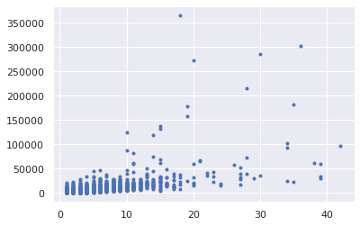
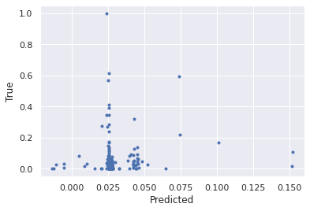
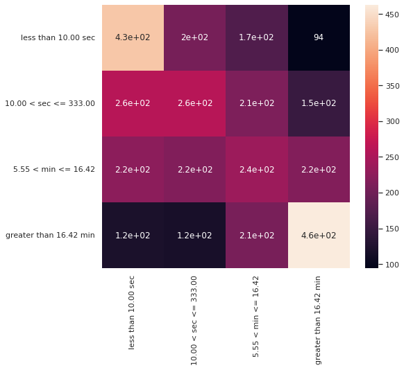

Causality Analysis¶
TODO¶
- ols assumptions for univariate analyses
- residual plots
- forward selection
- lines up more or less with chi square tests
- include some colinearity measure?
- logistic regression (binned seconds, binned total outs)
- random forest does little better than random guessing
- business impact
- reorganize hypothesis tests section
- univariate vs multivariate
- cat v vat, cat v quant, quant v quant, quant v cat
1.0 Imports¶
Import Libraries¶
# basic packages
import pandas as pd
import numpy as np
import random
import copy
# visualization packages
from ipywidgets import interact
import matplotlib.pyplot as plt
import plotly.express as px
import seaborn as sns; sns.set()
import graphviz
# stats packages
import scipy.stats as stats
from scipy.spatial.distance import cdist
import statsmodels.api as sm
from statsmodels.formula.api import ols
from statsmodels.stats.outliers_influence import variance_inflation_factor
# sklearn preprocessing
from sklearn.preprocessing import OneHotEncoder, StandardScaler, PolynomialFeatures, MinMaxScaler
from sklearn.decomposition import PCA
from sklearn.impute import SimpleImputer
from sklearn.model_selection import train_test_split
from sklearn.pipeline import make_pipeline
# sklearn modeling
from sklearn.neighbors import KNeighborsRegressor
from sklearn.ensemble import RandomForestClassifier, RandomForestRegressor, AdaBoostClassifier, GradientBoostingClassifier
from sklearn.linear_model import LinearRegression, LogisticRegression
from sklearn.mixture import GaussianMixture
from sklearn.cluster import KMeans
# sklearn evaluation
from sklearn.metrics import mean_squared_error, r2_score, accuracy_score, silhouette_score, calinski_harabasz_score, classification_report, confusion_matrix
from sklearn.model_selection import GridSearchCV, cross_val_score
def make_patch_spines_invisible(ax):
ax.set_frame_on(True)
ax.patch.set_visible(False)
for sp in ax.spines.values():
sp.set_visible(False)
from matplotlib import colors
from itertools import cycle
def my_colors():
tab = cycle(colors.TABLEAU_COLORS)
return tab
Load Data¶
consider feeds and operating conditions
feeds = ['ADD ARGUS ARGUSTAT AT 31 HK',
'ADD ARGUS ARGUTHERM AO 77 PP',
'ADD POLYPLAST PPM AO 01 UV PP',
'ADD SCHULMAN DTY 20 AOUV',
'BEIGE SCHULMAN PZ 91738 1 5 ZA',
'BLACK SCHULMAN P7381',
'DEVAN 2SPIN PP 106',
'GREEN POLYPLAST COLOUR MB PP 6821',
'GREEN SCHULMAN PZ 302446 1 5 T',
'High MFR Black',
'GREEN SCHULMAN PZ 34198 1 5 T',
'MFR 4 Black',
'MFR 4 Black Brown',
'High MFR Grey',
'MFR 4 Green',
'PP BOREALIS HE465FB',
'MFR 4 Black Colour Blending',
'PP INEOS 100 GA02',
'PP INEOS 100 GA04',
'PP INEOS 100 GA09',
'MFR 4 Grey Colour Blending',
'PP INEOS GA012',
'PP POLYCHIM HB12XF',
'MFR 4 White',
'PP TOTAL 7089',
'PP TOTAL PPH 4065',
'MFR 4 White Colour Blending',
'PP BOREALIS HE370FB',
'PP UNIPETROL GB005',
'SILIKAT PBH ABPP 05',
'SILIKAT POLYPLUS AB 1001 PP',
'UV ARGUS ARGUVIN UV 361 PP',
'UV ARGUS ARX 904 11 PP',
'UV ARGUS ARX 904 11 PP.1',
'UV ARGUS ARX 904 11 PP.2',
'UV POLYPLAST 6005 PP',
'UV SCHULMAN FPPUV 38',
'MFR 4 Grey',
'PP POLYCHIM HL10XF',
'MFR 4 Grey Grey',
'PP POLYMER TEST MFI4',
'PP TOTAL 4069',
'RR MASTERBATCH TEST',
'UV ARGUS ARX V 16 706 UV PP']
df = pd.read_csv('../../../../../Dropbox/work/mfganalytic/data/dupont/TyparMasterReportWithSampleDataImprovement2017-today.csv', header=1)
df = df.loc[df['Product'].notnull()]
df[feeds] = df[feeds].div(df[feeds].sum(axis=1), axis=0) #normalize feed rates
df['Time Delta'] = pd.to_datetime(df['Doff Time']).diff()
df['Total Seconds Out'] = df[[i for i in df.columns if 'Sec' in i]].sum(1)
# df.dropna(inplace=True)
hangs = [df.columns[i] for i, j in enumerate('Hang' in col for col in df.columns) if j]
speeds = [df.columns[i] for i, j in enumerate('speed' in col for col in df.columns) if j]
outs = [df.columns[i] for i, j in enumerate('Out' in col for col in df.columns) if j]
prods = df['Product'].unique()
counts = [i for i in df.columns if 'Count' in i]
#from LOEWEN
virgin_polymer = ['PP INEOS 100 GA04', 'PP POLYCHIM HB12XF', 'PP TOTAL 7089', #INEOS 100 GA09 until 2018 (2k rolls)
'PP TOTAL PPH 4065', 'PP UNIPETROL GB005', 'PP POLYCHIM HL10XF'] #HL10XF not used after 2016, #BOREALIS
virgin_polymer = []
for col in df.columns:
if ('PP INEOS' in col) or ('PP TOTAL' in col) or ('PP UNI' in col) or ('PP BORE' in col) or ('PP POLY' in col):
virgin_polymer.append(col)
pressures = []
for col in df.columns:
if 'Press' in col or 'PRESS' in col:
pressures.append(col)
silicates = []
for col in df.columns:
if 'SIL' in col:
silicates.append(col)
uvs = []
for col in df.columns:
if 'UV ' in col:
uvs.append(col)
recycle = []
for col in df.columns:
if 'MFR' in col:
recycle.append(col)
seconds = []
for col in df.columns:
if 'Sec' in col:
seconds.append(col)
master_batch = list(set(feeds) - set(recycle) - set(virgin_polymer))
operation = list(set(df.columns) - set(master_batch) - set(virgin_polymer) - set(recycle) -set(hangs) - set(outs))
operation.sort()
A summary of the columns
print(f'pressures: {len(pressures)}')
print(f'silicates: {len(silicates)}')
print(f'uvs: {len(uvs)}')
print(f'feeds: {len(feeds)}')
print(f'master_batch: {len(master_batch)}')
print(f'virgin_polymer: {len(virgin_polymer)}')
print(f'recycle: {len(recycle)}')
print(f'operation: {len(operation)}')
print()
print(f'hangs: {len(hangs)}')
print(f'speeds: {len(speeds)}')
print(f'outs: {len(outs)}')
print(f'seconds: {len(seconds)}')
print()
print('summary target columns: TotalHangs, Total Position Out')
print()
print(df.shape)
pressures: 8
silicates: 2
uvs: 8
feeds: 44
master_batch: 20
virgin_polymer: 13
recycle: 11
operation: 180
hangs: 9
speeds: 9
outs: 10
seconds: 9
summary target columns: TotalHangs, Total Position Out
(17897, 243)
all_feats = df.select_dtypes(float).columns[df.select_dtypes(float).columns.isin(feeds + operation)].values
df
| Millroll ID | Product | Roll Width | Sample Number | Doff Time | Block1Pos Out Seconds | Block2Pos Out Seconds | Block3Pos Out Seconds | Block4Pos Out Seconds | Block1Pos Out Count | ... | TKW5 AVG - Tack - Tear West 5 Meter | TPOP - NUMBER OF TPO PEEKS (TPOP) | TTMD AVG - TRAP TEAR MD (TTMD) | TTXD AVG - TRAP TEAR XD (TTXD) | UPEX - UWU PLOT EXTREM (UPEX) | UWG - UWU GRAVIMETRIC WITH SCALE (UWG) | UWGP AVG - UWU PLOT GRAVIMETRIC WITH SCALE (UWGP) | WATP - WATER PERMEABILITY (WATP) | Time Delta | Total Seconds Out | |
|---|---|---|---|---|---|---|---|---|---|---|---|---|---|---|---|---|---|---|---|---|---|
| 0 | PM10022907 | 136215.0 | 5200.0 | NaN | 1/1/2017 12:43:57 AM | NaN | NaN | NaN | NaN | NaN | ... | NaN | NaN | NaN | NaN | NaN | NaN | NaN | NaN | NaT | 9.0 |
| 1 | PM10022908 | 136215.0 | 5200.0 | NaN | 1/1/2017 1:32:49 AM | NaN | 164.0 | 240.0 | NaN | NaN | ... | NaN | NaN | NaN | NaN | NaN | 138.70 | NaN | NaN | 0 days 00:48:52 | 536.0 |
| 2 | PM10022909 | 136215.0 | 5200.0 | NaN | 1/1/2017 2:21:40 AM | NaN | NaN | NaN | NaN | NaN | ... | NaN | NaN | NaN | NaN | NaN | NaN | NaN | NaN | 0 days 00:48:51 | 20.0 |
| 3 | PM10022910 | 136215.0 | 5200.0 | NaN | 1/1/2017 3:10:34 AM | NaN | 320.0 | 264.0 | NaN | NaN | ... | NaN | NaN | 36.96 | 33.59 | NaN | 135.98 | NaN | NaN | 0 days 00:48:54 | 1001.0 |
| 4 | PM10022911 | 136215.0 | 5200.0 | NaN | 1/1/2017 3:59:24 AM | NaN | NaN | NaN | NaN | NaN | ... | NaN | NaN | NaN | NaN | NaN | NaN | NaN | NaN | 0 days 00:48:50 | 0.0 |
| ... | ... | ... | ... | ... | ... | ... | ... | ... | ... | ... | ... | ... | ... | ... | ... | ... | ... | ... | ... | ... | ... |
| 17892 | PM10040811 | 90215.0 | 4250.0 | P113099,P113100,P113101,P113102,P113103 | 2/25/2019 7:56:16 PM | NaN | NaN | NaN | NaN | NaN | ... | NaN | NaN | 21.30 | 22.10 | NaN | 89.60 | NaN | NaN | 0 days 00:57:24 | 0.0 |
| 17893 | PM10040812 | 90215.0 | 4250.0 | P113104 | 2/25/2019 8:53:41 PM | NaN | NaN | NaN | NaN | NaN | ... | NaN | NaN | NaN | NaN | NaN | NaN | NaN | NaN | 0 days 00:57:25 | 0.0 |
| 17894 | PM10040813 | 90215.0 | 4250.0 | P113105,P113106,P113107 | 2/25/2019 9:51:06 PM | NaN | NaN | NaN | NaN | NaN | ... | NaN | NaN | NaN | NaN | NaN | 89.30 | NaN | NaN | 0 days 00:57:25 | 0.0 |
| 17895 | PM10040814 | 90215.0 | 4250.0 | P113108 | 2/25/2019 10:48:32 PM | NaN | NaN | 576.0 | NaN | NaN | ... | NaN | NaN | NaN | NaN | NaN | NaN | NaN | NaN | 0 days 00:57:26 | 799.0 |
| 17896 | PM10040815 | 90215.0 | 4250.0 | P113109,P113110,P113111,P113112 | 2/25/2019 11:45:55 PM | NaN | NaN | 429.0 | NaN | NaN | ... | NaN | NaN | 23.20 | 22.60 | NaN | 91.40 | NaN | NaN | 0 days 00:57:23 | 429.0 |
17897 rows 243 columns
2.0 Understand The Dependent Variable¶
What is the hit rate in these upset columns?¶
Around 7500 cases with no problem; 10000 cases with a position out
target = "Total Position Out"
df.groupby(target).apply(lambda x: x[target] > 0).value_counts()
True 10355
False 7542
Name: Total Position Out, dtype: int64
There are 30% higher incidence of hangs
target = "TotalHangs"
df.groupby(target).apply(lambda x: x[target] > 0).value_counts()
True 13954
False 3943
Name: TotalHangs, dtype: int64
target1 = "TotalHangs"
target2 = "Total Position Out"
print(f"both upsets: {df.loc[(df[target1] > 0) & (df[target2] > 0)].shape[0]}")
print(f"only hangs: {df.loc[(df[target1] > 0) & (df[target2] == 0)].shape[0]}")
print(f"only outs: {df.loc[(df[target1] == 0) & (df[target2] > 0)].shape[0]}")
print(f"neither upset: {df.loc[(df[target1] == 0) & (df[target2] == 0)].shape[0]}")
both upsets: 10161
only hangs: 3793
only outs: 194
neither upset: 3749
What is the magnitude of the outages?¶
target = "Total Position Out"
y = df.loc[df[target] > 0][[i for i in outs if 'Sec' in i]].sum(axis=1)
x = df.loc[df[target] > 0][target]
plt.plot(x, y, ls='', marker='.')
[<matplotlib.lines.Line2D at 0x7f0ad7207b80>]

pd.DataFrame([x,y]).T.corr()
| Total Position Out | Unnamed 0 | |
|---|---|---|
| Total Position Out | 1.00000 | 0.62591 |
| Unnamed 0 | 0.62591 | 1.00000 |
target = "TotalHangs"
y = df.loc[df[target] > 0][[i for i in outs if 'Sec' in i]].sum(axis=1)
x = df.loc[df[target] > 0][target]
plt.plot(x, y, ls='', marker='.')
[<matplotlib.lines.Line2D at 0x7f0ad3eff460>]

pd.DataFrame([x,y]).T.corr()
| TotalHangs | Unnamed 0 | |
|---|---|---|
| TotalHangs | 1.000000 | 0.390949 |
| Unnamed 0 | 0.390949 | 1.000000 |
Distribution around the target variable, total seconds¶
We will certainly encounter trouble in an OLS estimate with this shape of the target variable; extreme skewness, upper tail, perhaps outliers
tot_seconds = df[seconds].sum(1)
tot_seconds.kurt()
923.6728632470827
tot_seconds.skew()
25.09323820232841
tot_seconds.plot.kde()
<AxesSubplot:ylabel='Density'>
tot_seconds.describe()
count 17897.000000
mean 2093.512879
std 8060.466090
min 0.000000
25% 20.000000
50% 666.000000
75% 1970.000000
max 396570.000000
dtype: float64
Do block positions have the same behavior?¶
target = "TotalHangs"
df.groupby(target)[hangs].count()
| Block1Hangs Seconds | Block2Hangs Seconds | Block3Hangs Seconds | Block4Hangs Seconds | Block1Hangs Count | Block2Hangs Count | Block3Hangs Count | Block4Hangs Count | TotalHangs | |
|---|---|---|---|---|---|---|---|---|---|
| TotalHangs | |||||||||
| 0.0 | 0 | 0 | 0 | 0 | 0 | 0 | 0 | 0 | 3943 |
| 1.0 | 510 | 682 | 745 | 977 | 510 | 682 | 745 | 977 | 2914 |
| 2.0 | 709 | 761 | 901 | 1109 | 709 | 761 | 901 | 1109 | 2424 |
| 3.0 | 721 | 776 | 930 | 1103 | 721 | 776 | 930 | 1103 | 1929 |
| 4.0 | 700 | 773 | 875 | 993 | 700 | 773 | 875 | 993 | 1577 |
| 5.0 | 609 | 668 | 744 | 828 | 609 | 668 | 745 | 828 | 1189 |
| 6.0 | 523 | 498 | 599 | 631 | 523 | 498 | 599 | 631 | 883 |
| 7.0 | 387 | 414 | 472 | 505 | 387 | 414 | 472 | 505 | 640 |
| 8.0 | 321 | 338 | 376 | 409 | 321 | 338 | 376 | 409 | 503 |
| 9.0 | 286 | 275 | 305 | 339 | 286 | 275 | 305 | 339 | 405 |
| 10.0 | 219 | 206 | 244 | 248 | 219 | 206 | 244 | 248 | 296 |
| 11.0 | 144 | 154 | 168 | 171 | 144 | 154 | 168 | 171 | 203 |
| 12.0 | 148 | 139 | 159 | 171 | 148 | 139 | 159 | 171 | 191 |
| 13.0 | 105 | 100 | 117 | 106 | 105 | 100 | 117 | 106 | 131 |
| 14.0 | 93 | 88 | 95 | 96 | 93 | 88 | 95 | 96 | 109 |
| 15.0 | 97 | 89 | 94 | 97 | 97 | 89 | 94 | 97 | 108 |
| 16.0 | 70 | 64 | 72 | 76 | 70 | 64 | 72 | 76 | 81 |
| 17.0 | 51 | 50 | 51 | 47 | 51 | 50 | 51 | 47 | 55 |
| 18.0 | 29 | 30 | 32 | 33 | 29 | 30 | 32 | 33 | 35 |
| 19.0 | 32 | 32 | 33 | 32 | 32 | 32 | 33 | 32 | 35 |
| 20.0 | 32 | 32 | 31 | 34 | 32 | 32 | 31 | 34 | 35 |
| 21.0 | 26 | 27 | 25 | 24 | 26 | 27 | 25 | 24 | 28 |
| 22.0 | 21 | 20 | 24 | 24 | 21 | 20 | 24 | 24 | 24 |
| 23.0 | 23 | 23 | 24 | 23 | 23 | 23 | 24 | 23 | 25 |
| 24.0 | 16 | 17 | 18 | 19 | 16 | 17 | 18 | 19 | 20 |
| 25.0 | 7 | 8 | 8 | 7 | 7 | 8 | 8 | 7 | 8 |
| 26.0 | 11 | 10 | 10 | 11 | 11 | 10 | 10 | 11 | 11 |
| 27.0 | 8 | 9 | 9 | 8 | 8 | 9 | 9 | 8 | 9 |
| 28.0 | 10 | 10 | 10 | 10 | 10 | 10 | 10 | 10 | 10 |
| 29.0 | 6 | 5 | 6 | 6 | 6 | 5 | 6 | 6 | 6 |
| 30.0 | 4 | 3 | 4 | 4 | 4 | 3 | 4 | 4 | 4 |
| 31.0 | 8 | 8 | 8 | 8 | 8 | 8 | 8 | 8 | 8 |
| 32.0 | 4 | 3 | 4 | 4 | 4 | 3 | 4 | 4 | 4 |
| 33.0 | 7 | 5 | 7 | 6 | 7 | 5 | 7 | 6 | 7 |
| 34.0 | 9 | 8 | 9 | 8 | 9 | 8 | 9 | 8 | 9 |
| 35.0 | 6 | 6 | 6 | 6 | 6 | 6 | 6 | 6 | 6 |
| 36.0 | 6 | 5 | 6 | 6 | 6 | 5 | 6 | 6 | 6 |
| 37.0 | 3 | 3 | 3 | 3 | 3 | 3 | 3 | 3 | 3 |
| 38.0 | 1 | 1 | 1 | 0 | 1 | 1 | 1 | 0 | 1 |
| 39.0 | 1 | 1 | 1 | 1 | 1 | 1 | 1 | 1 | 1 |
| 40.0 | 2 | 2 | 2 | 2 | 2 | 2 | 2 | 2 | 2 |
| 42.0 | 1 | 1 | 1 | 1 | 1 | 1 | 1 | 1 | 1 |
| 43.0 | 3 | 3 | 3 | 3 | 3 | 3 | 3 | 3 | 3 |
| 45.0 | 3 | 3 | 3 | 3 | 3 | 3 | 3 | 3 | 3 |
| 46.0 | 2 | 2 | 2 | 2 | 2 | 2 | 2 | 2 | 2 |
| 48.0 | 1 | 1 | 1 | 1 | 1 | 1 | 1 | 1 | 1 |
| 52.0 | 1 | 1 | 1 | 1 | 1 | 1 | 1 | 1 | 1 |
| 53.0 | 1 | 1 | 1 | 1 | 1 | 1 | 1 | 1 | 1 |
| 54.0 | 1 | 1 | 1 | 1 | 1 | 1 | 1 | 1 | 1 |
| 58.0 | 1 | 1 | 1 | 1 | 1 | 1 | 1 | 1 | 1 |
| 62.0 | 1 | 1 | 1 | 1 | 1 | 1 | 1 | 1 | 1 |
| 63.0 | 1 | 1 | 1 | 1 | 1 | 1 | 1 | 1 | 1 |
| 70.0 | 1 | 1 | 1 | 1 | 1 | 1 | 1 | 1 | 1 |
| 72.0 | 1 | 1 | 1 | 1 | 1 | 1 | 1 | 1 | 1 |
| 140.0 | 1 | 1 | 1 | 1 | 1 | 1 | 1 | 1 | 1 |
df[[i for i in outs if 'Sec' in i]].boxplot(vert=False)
<AxesSubplot:>

df[[i for i in hangs if 'Sec' in i]].boxplot(vert=False)
<AxesSubplot:>
3.0 Look for dependent-independent signal¶
Are there linear relationships between the dependent and independent variables?¶
corr = df.corr()
(abs(corr[outs+hangs]) > 0.3).any(axis=1)
Product False
Roll Width False
Block1Pos Out Seconds True
Block2Pos Out Seconds True
Block3Pos Out Seconds True
...
UPEX - UWU PLOT EXTREM (UPEX) False
UWG - UWU GRAVIMETRIC WITH SCALE (UWG) False
UWGP AVG - UWU PLOT GRAVIMETRIC WITH SCALE (UWGP) False
WATP - WATER PERMEABILITY (WATP) False
Total Seconds Out True
Length: 237, dtype: bool
cor_filt = corr.loc[(abs(corr[outs+hangs]) > 0.3).any(axis=1)].drop(labels=outs+hangs, axis=0)[outs+hangs]
cor_filt
| Block1Pos Out Seconds | Block2Pos Out Seconds | Block3Pos Out Seconds | Block4Pos Out Seconds | Block1Pos Out Count | Block2Pos Out Count | Block3Pos Out Count | Block4Pos Out Count | Total Position Out | Total Seconds Out | Block1Hangs Seconds | Block2Hangs Seconds | Block3Hangs Seconds | Block4Hangs Seconds | Block1Hangs Count | Block2Hangs Count | Block3Hangs Count | Block4Hangs Count | TotalHangs | |
|---|---|---|---|---|---|---|---|---|---|---|---|---|---|---|---|---|---|---|---|
| ADD ARGUS ARGUSTAT AT 31 HK | -0.103999 | -0.417688 | -0.383222 | 0.202131 | -0.056194 | -0.412274 | 0.155126 | 0.145535 | 0.014216 | 0.029563 | 0.121682 | -0.256723 | -0.012676 | 0.099690 | -0.069354 | -0.041492 | 0.094150 | 0.041900 | 0.344896 |
| PP INEOS 100 GA02 | NaN | NaN | NaN | NaN | NaN | NaN | NaN | NaN | -1.000000 | -1.000000 | NaN | NaN | NaN | NaN | NaN | NaN | NaN | NaN | -1.000000 |
| MFR 4 White | 0.289648 | -0.016268 | 0.451446 | -0.155932 | 0.297256 | -0.000098 | 0.376795 | -0.003129 | 0.225425 | 0.182687 | 0.231764 | -0.045076 | 0.283286 | -0.119481 | 0.108396 | -0.057188 | 0.317089 | 0.008018 | 0.189109 |
| PP TOTAL 7089 | 0.160268 | 0.171023 | 0.210796 | 0.093720 | 0.192159 | 0.210942 | 0.206859 | 0.076058 | 0.260505 | 0.207522 | 0.087954 | 0.050670 | 0.052622 | -0.050506 | 0.218148 | 0.251676 | 0.134881 | 0.121080 | 0.331897 |
| SILIKAT POLYPLUS AB 1001 PP | 0.015132 | 0.125801 | 0.379559 | 0.255662 | -0.018715 | 0.012019 | 0.161698 | 0.067661 | 0.127830 | 0.137376 | -0.016317 | -0.018187 | -0.018956 | 0.086781 | 0.011207 | -0.020307 | 0.092291 | 0.109259 | 0.069217 |
| RJET15219WG1 - Corona Charge I AVG BLK#2 | -0.120204 | -0.120509 | -0.056377 | -0.002054 | -0.198138 | -0.221189 | -0.193393 | -0.024541 | -0.232863 | -0.149862 | -0.090896 | -0.060404 | -0.054169 | -0.052683 | -0.215325 | -0.216545 | -0.182990 | -0.120387 | -0.308217 |
| BLFL - COLOUR BLACK FILAMENT L value (BLFL) | -0.360086 | -0.157845 | -0.245565 | -0.268837 | -0.153321 | -0.162697 | -0.212481 | -0.247721 | -0.067632 | -0.121690 | 0.097783 | 0.146515 | -0.346923 | -0.110987 | 0.402310 | -0.274153 | -0.378670 | -0.116264 | -0.117501 |
| BRFA - COLOUR BROWN FILAMENT a value (BRFa) | 0.159056 | 0.250229 | -0.384880 | 0.109024 | 0.134248 | 0.112836 | -0.380715 | -0.054074 | 0.099040 | 0.166926 | 0.170184 | -0.065344 | -0.195062 | 0.094596 | 0.195404 | -0.333632 | -0.026209 | 0.177576 | 0.173995 |
| BRFB - COLOUR BROWN FILAMENT b value (BRFb) | 0.413876 | 0.047748 | 0.332752 | 0.342115 | 0.145794 | -0.028170 | 0.246787 | 0.234624 | 0.216156 | 0.311363 | 0.148441 | -0.210193 | 0.118275 | 0.285286 | -0.027055 | -0.275750 | 0.100830 | 0.328240 | 0.164345 |
| BRFL - COLOUR BROWN FILAMENT L value (BRFL) | 0.198864 | -0.178050 | 0.483242 | 0.205796 | 0.017456 | -0.220432 | 0.411110 | 0.090885 | 0.039031 | 0.128326 | 0.337130 | -0.326368 | 0.075738 | 0.145878 | 0.195055 | -0.467536 | -0.075130 | 0.188013 | -0.000575 |
| E20M AVG - SST ELONGATION 20X20 MD (E20M) | 0.106870 | -0.096775 | -0.249986 | -0.039633 | 0.009518 | -0.049131 | -0.367065 | -0.074018 | -0.070058 | -0.071425 | -0.124456 | -0.016993 | -0.070312 | -0.036314 | -0.145788 | -0.075968 | -0.197153 | -0.069477 | -0.072872 |
| EF1M AVG - SST ELONGATION FOLDED 10 CM MD (EF1M) | 1.000000 | NaN | 1.000000 | -0.081738 | 1.000000 | NaN | NaN | NaN | -0.101606 | -0.178993 | 0.313364 | -0.936781 | -1.000000 | -0.517401 | 0.306235 | -0.950303 | -1.000000 | -0.324932 | -0.112334 |
| EF1X AVG - SST ELONGATION FOLDED 10 CM XD (EF1X) | 1.000000 | NaN | 1.000000 | 0.126777 | 1.000000 | NaN | NaN | NaN | 0.010039 | -0.063399 | 0.896084 | -0.961383 | -1.000000 | -0.609904 | 0.892730 | -0.971830 | -1.000000 | -0.340772 | 0.050483 |
| NATM AVG - Nail Tear MD EN 13859-1 (NATM) | -0.517421 | -0.835147 | 0.511409 | -0.258360 | -0.296500 | -0.906038 | NaN | -0.333754 | -0.100244 | 0.013436 | -0.338129 | 0.580493 | 0.826191 | -0.322585 | -0.348782 | 0.063309 | 0.929207 | -0.430201 | 0.086484 |
| NATX AVG - Nail Tear XD EN 13859-1 (NATX) | 0.269389 | -0.864128 | 0.542651 | 0.071499 | -0.053990 | -0.927938 | NaN | -0.056465 | -0.084131 | 0.046366 | -0.190830 | 0.541297 | 0.777131 | -0.114506 | -0.096640 | 0.051081 | 0.902927 | -0.295087 | 0.093804 |
| O90 - O90 EN ISO 12956 (O90E) | NaN | NaN | NaN | 0.807962 | NaN | NaN | NaN | NaN | -0.265093 | -0.268107 | -0.280791 | -0.378899 | NaN | -0.451610 | -0.307148 | -0.267261 | NaN | -0.269680 | -0.193539 |
| PU AVG - PUNCTURE "US Rod" (PU) | 0.173625 | -0.790779 | -0.165265 | 0.451194 | -0.127912 | -0.952390 | -0.184515 | 0.734933 | -0.040323 | -0.021124 | 0.096383 | -0.998695 | -0.288786 | 0.156274 | 0.066142 | 0.363427 | -0.297118 | 0.479459 | -0.239496 |
| TKO4 AVG - Tack-Tear Ost 4Meter | -0.170480 | -0.383667 | -0.326335 | 0.006590 | -0.104058 | -0.308260 | -0.329544 | 0.047734 | -0.171814 | -0.195662 | -0.214633 | -0.440748 | -0.182875 | -0.027353 | -0.077638 | -0.447423 | -0.187893 | 0.114764 | -0.160340 |
| TKO5 AVG - Tack - Tear Ost 5 Meter | 1.000000 | 0.134107 | 0.560717 | -0.070116 | NaN | 0.106485 | 0.152594 | -0.525375 | -0.373817 | -0.306252 | 0.338272 | 0.155577 | 0.034557 | -0.453643 | 0.286066 | 0.056270 | -0.066270 | -0.400941 | -0.387297 |
| TKW4 AVG - Tack-Tear West 4Meter | -0.334291 | -0.282220 | -0.265607 | -0.134467 | -0.320379 | -0.231417 | -0.300679 | -0.265049 | -0.274024 | -0.250617 | -0.277325 | -0.375559 | -0.168965 | -0.154119 | -0.236424 | -0.282687 | -0.168865 | -0.162801 | -0.316193 |
| TKW5 AVG - Tack - Tear West 5 Meter | 1.000000 | 0.051583 | 0.100609 | 0.018368 | NaN | 0.014194 | -0.167032 | -0.366762 | -0.279911 | -0.190366 | 0.069184 | 0.108657 | 0.224892 | -0.326866 | -0.003422 | 0.043730 | 0.039670 | -0.362928 | -0.270898 |
fig, ax = plt.subplots(figsize=(10,10))
cmap = sns.diverging_palette(230, 20, as_cmap=True)
sns.heatmap(cor_filt, cmap=cmap)
<AxesSubplot:>
Filter N > 100¶
cor_filt = cor_filt.loc[[df[item].dropna().shape[0] > 100 for item in cor_filt.index]]
fig, ax = plt.subplots(figsize=(10,10))
cmap = sns.diverging_palette(230, 20, as_cmap=True)
sns.heatmap(cor_filt.loc[[df[item].dropna().shape[0] > 100 for item in cor_filt.index]], cmap=cmap)
<AxesSubplot:>
Operating Conditions¶
fig, ax = plt.subplots(figsize=(10,10))
cmap = sns.diverging_palette(230, 20, as_cmap=True)
sns.heatmap(cor_filt.loc[cor_filt.index.isin(operation)], cmap=cmap)
ax.set_title("Operations Correlations to Hangs and Outs")
Text(0.5, 1.0, 'Operations Correlations to Hangs and Outs')

Feeds¶
fig, ax = plt.subplots(figsize=(10,10))
cmap = sns.diverging_palette(230, 20, as_cmap=True)
sns.heatmap(cor_filt.loc[~cor_filt.index.isin(operation)], cmap=cmap)
ax.set_title("Feeds Correlations to Hangs and Outs")
Text(0.5, 1.0, 'Feeds Correlations to Hangs and Outs')
ind_vars = list(cor_filt.index[~cor_filt.index.isin(operation)])
ind_vars
['MFR 4 White', 'PP TOTAL 7089', 'SILIKAT POLYPLUS AB 1001 PP']
fig, ax = plt.subplots(1, 3, figsize=(30,10))
indices = np.argwhere(ax)
for index, ind_var in enumerate(ind_vars):
df[[ind_var] + seconds].melt(id_vars=ind_var,
value_vars=None,
var_name=None,).plot(x=ind_var, y='value', ax=ax[index], ls='', marker='.')
4.0 Understand the Independent Variable¶
Descriptive Stats on Ind Var¶
all the feeds sum to 1 (feeds are mass or volume fractions), so we probably won't need to worry about scaling
df[feeds].sum(1)
0 1.0
1 1.0
2 1.0
3 1.0
4 1.0
...
17892 1.0
17893 1.0
17894 1.0
17895 1.0
17896 1.0
Length: 17897, dtype: float64
many of the feeds are not used at all
skew = df[feeds].skew()
kurt = df[feeds].kurtosis()
null = df[feeds].isnull().sum()
n = df[feeds].notnull().sum()
med = df[feeds].median()
men = df[feeds].mean()
dff = pd.DataFrame([skew, kurt, null, n, med, men])
dff = dff.T
dff.columns = ['skew', 'kurtosis', 'null cnt', 'n', 'median', 'mean']
dff.loc[dff['n'] > 0]
| skew | kurtosis | null cnt | n | median | mean | |
|---|---|---|---|---|---|---|
| ADD ARGUS ARGUSTAT AT 31 HK | -1.122018 | -0.275303 | 17798.0 | 99.0 | 0.006560 | 0.005080 |
| ADD ARGUS ARGUTHERM AO 77 PP | 14.927951 | 248.300227 | 15627.0 | 2270.0 | 0.005249 | 0.010705 |
| ADD POLYPLAST PPM AO 01 UV PP | 5.788514 | 87.051660 | 16769.0 | 1128.0 | 0.006397 | 0.006218 |
| ADD SCHULMAN DTY 20 AOUV | 6.573319 | 99.052816 | 13484.0 | 4413.0 | 0.004997 | 0.005411 |
| BEIGE SCHULMAN PZ 91738 1 5 ZA | -0.455858 | 10.108094 | 16975.0 | 922.0 | 0.008922 | 0.008708 |
| BLACK SCHULMAN P7381 | 2.301415 | 16.313957 | 4471.0 | 13426.0 | 0.000317 | 0.002040 |
| DEVAN 2SPIN PP 106 | 0.770601 | 11.066370 | 13279.0 | 4618.0 | 0.006658 | 0.005554 |
| GREEN POLYPLAST COLOUR MB PP 6821 | -1.856631 | 3.540741 | 16894.0 | 1003.0 | 0.007519 | 0.006822 |
| GREEN SCHULMAN PZ 302446 1 5 T | 0.363239 | 8.864015 | 17150.0 | 747.0 | 0.018764 | 0.018006 |
| High MFR Black | 0.473484 | -1.518082 | 14862.0 | 3035.0 | 0.047883 | 0.146677 |
| MFR 4 Black | 1.612264 | 4.261601 | 12595.0 | 5302.0 | 0.030099 | 0.098792 |
| MFR 4 Black Brown | -0.086521 | -0.342944 | 16360.0 | 1537.0 | 0.189244 | 0.150273 |
| High MFR Grey | -0.364616 | -1.483643 | 15900.0 | 1997.0 | 0.226358 | 0.199138 |
| MFR 4 Green | 0.149918 | 8.244109 | 15985.0 | 1912.0 | 0.279622 | 0.262574 |
| PP INEOS 100 GA02 | NaN | NaN | 17895.0 | 2.0 | 0.107927 | 0.107927 |
| PP INEOS 100 GA04 | 1.294449 | 5.764334 | 6684.0 | 11213.0 | 0.208757 | 0.216941 |
| PP INEOS 100 GA09 | -0.449540 | -0.968103 | 16802.0 | 1095.0 | 0.224353 | 0.219208 |
| PP POLYCHIM HB12XF | -0.222658 | -0.684893 | 16525.0 | 1372.0 | 0.275755 | 0.291827 |
| MFR 4 White | 1.136619 | 2.053071 | 17559.0 | 338.0 | 0.098961 | 0.111129 |
| PP TOTAL 7089 | -0.216726 | -1.333059 | 16346.0 | 1551.0 | 0.276430 | 0.288643 |
| PP TOTAL PPH 4065 | 0.353911 | 0.740658 | 611.0 | 17286.0 | 0.441009 | 0.424684 |
| PP UNIPETROL GB005 | 0.117291 | 1.045121 | 11444.0 | 6453.0 | 0.324773 | 0.295906 |
| SILIKAT PBH ABPP 05 | 2.690146 | 26.471577 | 15967.0 | 1930.0 | 0.005001 | 0.005229 |
| SILIKAT POLYPLUS AB 1001 PP | 6.874010 | 77.288671 | 17360.0 | 537.0 | 0.002506 | 0.002642 |
| UV ARGUS ARX 904 11 PP | 1.405525 | 3.135048 | 17166.0 | 731.0 | 0.019242 | 0.025060 |
| UV ARGUS ARX 904 11 PP.1 | 1.405525 | 3.135048 | 17166.0 | 731.0 | 0.019242 | 0.025060 |
| UV ARGUS ARX 904 11 PP.2 | 1.405525 | 3.135048 | 17166.0 | 731.0 | 0.019242 | 0.025060 |
| UV POLYPLAST 6005 PP | 1.426790 | 1.634549 | 17506.0 | 391.0 | 0.020009 | 0.026245 |
| UV SCHULMAN FPPUV 38 | 2.114261 | 14.372541 | 17141.0 | 756.0 | 0.029986 | 0.032261 |
| MFR 4 Grey | 1.718802 | 10.970192 | 8567.0 | 9330.0 | 0.269445 | 0.263401 |
| MFR 4 Grey Grey | 3.607370 | 20.342313 | 15865.0 | 2032.0 | 0.040035 | 0.068547 |
| UV ARGUS ARX V 16 706 UV PP | 1.889895 | 6.474782 | 7972.0 | 9925.0 | 0.002110 | 0.007994 |
our ind_vars feeds have some strong correlations with other feeds
In particular, PP TOTAL 7089 and SILIKAT POLYPLUS AB 1001 PP have a correlation w/ eachother of .923
ind_corr = df[feeds].corr()[ind_vars].dropna(how='all')
ind_corr.loc[(abs(ind_corr) > 0.5).any(1)]
| MFR 4 White | PP TOTAL 7089 | SILIKAT POLYPLUS AB 1001 PP | |
|---|---|---|---|
| ADD SCHULMAN DTY 20 AOUV | -0.741967 | -0.057221 | -0.875009 |
| High MFR Black | NaN | -0.351428 | 0.538436 |
| MFR 4 Black | -0.442742 | 0.876072 | -0.602269 |
| PP INEOS 100 GA09 | NaN | -0.654004 | NaN |
| PP POLYCHIM HB12XF | NaN | -0.697618 | 0.322222 |
| MFR 4 White | 1.000000 | NaN | NaN |
| PP TOTAL 7089 | NaN | 1.000000 | 0.923427 |
| PP UNIPETROL GB005 | -0.634001 | -0.713590 | 0.148101 |
| SILIKAT POLYPLUS AB 1001 PP | NaN | 0.923427 | 1.000000 |
ind_vars feeds exhibit bimodal distributions (2+ recipes)
for ind in ind_vars:
df[ind].plot.kde()
plt.title(ind)
plt.xlim(0)
plt.show()


5.0 Hypothesis Tests¶
Non-Parametric¶
Univariate Categorical to Categorical (Chi-Square)¶
ind_vars
['MFR 4 White', 'PP TOTAL 7089', 'SILIKAT POLYPLUS AB 1001 PP']
chidf = pd.DataFrame()
target = 'Total Position Out'
chidf[target] = df[target] > 0
for ind in ind_vars:
chidf[ind] = (df[ind] > 0 ) | (df[ind].notnull())
display(chidf.groupby(ind)[target].value_counts())
# in cTable, populations are rows (Tot Pos Out)
# groups are columns (w/ the feed w/o the feed)
cTable = (chidf.groupby(ind)[target].value_counts().values).reshape(2,2).T
print(cTable)
chi2, p, dof, ex = stats.chi2_contingency(cTable, correction=True, lambda_=None)
print(f"chi2 stat: {chi2:.2f} \tp-value: {p:.2e}")
print()
MFR 4 White Total Position Out
False True 10182
False 7377
True True 173
False 165
Name: Total Position Out, dtype: int64
[[10182 173]
[ 7377 165]]
chi2 stat: 6.02 p-value: 1.41e-02
PP TOTAL 7089 Total Position Out
False True 9171
False 7175
True True 1184
False 367
Name: Total Position Out, dtype: int64
[[9171 1184]
[7175 367]]
chi2 stat: 237.00 p-value: 1.78e-53
SILIKAT POLYPLUS AB 1001 PP Total Position Out
False True 9996
False 7364
True True 359
False 178
Name: Total Position Out, dtype: int64
[[9996 359]
[7364 178]]
chi2 stat: 17.99 p-value: 2.22e-05
chidf = pd.DataFrame()
target = 'Total Position Out'
chidf[target] = df[target] > 0
chisum = pd.DataFrame()
cutoff = 0.01
for ind in feeds:
chidf[ind] = (df[ind] > 0 ) | (df[ind].notnull())
try:
cTable = (chidf.groupby(ind)[target].value_counts().values).reshape(2,2).T
chi2, p, dof, ex = stats.chi2_contingency(cTable, correction=True, lambda_=None)
ratio = cTable[0]/cTable[1]
pos = ratio[0]/ratio[1] > 1
chisum = pd.concat([chisum, pd.DataFrame([[ind, chi2, p, cTable, pos, p<cutoff]])])
except:
# print(f"\t\t{ind} returned error; n: {chidf[ind].sum()}")
pass
chisum.columns = ['feed', 'chi', 'p-value', 'cTable', '+', 'reject null']
chisum = chisum.sort_values('p-value').reset_index(drop=True)
chisum['type'] = None
chisum.loc[chisum['feed'].isin(master_batch), 'type'] = 'master_batch'
chisum.loc[chisum['feed'].isin(recycle), 'type'] = 'recyle'
chisum.loc[chisum['feed'].isin(virgin_polymer), 'type'] = 'virgin_polymer'
chisum.loc[chisum['feed'].isin(silicates), 'type'] = 'silicates'
chisum.loc[chisum['feed'].isin(uvs), 'type'] = 'uvs'
chisum.loc[chisum['reject null'] == True]
| feed | chi | p-value | cTable | + | reject null | type | |
|---|---|---|---|---|---|---|---|
| 0 | PP TOTAL 7089 | 236.997695 | 1.775656e-53 | [[9171, 1184], [7175, 367]] | False | True | virgin_polymer |
| 1 | PP POLYCHIM HB12XF | 160.530330 | 8.665205e-37 | [[9338, 1017], [7187, 355]] | False | True | virgin_polymer |
| 2 | High MFR Grey | 136.568590 | 1.498471e-31 | [[8956, 1399], [6944, 598]] | False | True | recyle |
| 3 | SILIKAT PBH ABPP 05 | 125.809746 | 3.384213e-29 | [[9008, 1347], [6959, 583]] | False | True | silicates |
| 4 | BLACK SCHULMAN P7381 | 105.280707 | 1.060033e-24 | [[2353, 8237], [2118, 5189]] | False | True | master_batch |
| 5 | PP INEOS 100 GA09 | 53.633573 | 2.415953e-13 | [[9605, 750], [7197, 345]] | False | True | virgin_polymer |
| 6 | ADD ARGUS ARGUTHERM AO 77 PP | 49.779216 | 1.720570e-12 | [[8886, 1469], [6741, 801]] | False | True | master_batch |
| 7 | DEVAN 2SPIN PP 106 | 35.237690 | 2.918209e-09 | [[7511, 2844], [5768, 1774]] | False | True | master_batch |
| 8 | High MFR Black | 34.917755 | 3.439303e-09 | [[8452, 1903], [6410, 1132]] | False | True | recyle |
| 9 | GREEN POLYPLAST COLOUR MB PP 6821 | 29.252089 | 6.354766e-08 | [[9692, 663], [7202, 340]] | False | True | master_batch |
| 10 | MFR 4 Black Brown | 20.494540 | 5.980160e-06 | [[9550, 805], [6810, 732]] | True | True | recyle |
| 11 | UV ARGUS ARX V 16 706 UV PP | 20.048858 | 7.548859e-06 | [[4465, 5890], [3507, 4035]] | False | True | uvs |
| 12 | ADD POLYPLAST PPM AO 01 UV PP | 19.643205 | 9.333462e-06 | [[9774, 581], [6995, 547]] | True | True | uvs |
| 13 | SILIKAT POLYPLUS AB 1001 PP | 17.988635 | 2.222278e-05 | [[9996, 359], [7364, 178]] | False | True | silicates |
| 14 | GREEN SCHULMAN PZ 302446 1 5 T | 14.155700 | 1.682865e-04 | [[9973, 382], [7177, 365]] | True | True | master_batch |
| 15 | MFR 4 Grey Grey | 9.004184 | 2.693622e-03 | [[9464, 1141], [6401, 891]] | True | True | recyle |
Check confounding variables¶
Isolate Products (product conflation with feed)
Let's isolate the comparison by only products made with the feed (ind_var) in question
We see that MFR 4 White and SILIKAT POLYPLUS AB 1001 PP are very imbalanced compared to PP TOTAL 7089
target = 'Total Position Out'
for ind in ind_vars:
chidf = pd.DataFrame()
# isolate products made with `ind`
dff = df.loc[df['Product'].isin(df.loc[df[ind] > 0]['Product'].unique())]
chidf[target] = dff[target] > 0
chidf[ind] = dff[ind] > 0
display(chidf.groupby(ind)[target].value_counts())
# in cTable, populations are rows (Tot Pos Out)
# groups are columns (w/ the feed w/o the feed)
cTable = (chidf.groupby(ind)[target].value_counts().values).reshape(2,2).T
print(cTable)
chi2, p, dof, ex = stats.chi2_contingency(cTable, correction=True, lambda_=None)
print(f"chi2 stat: {chi2:.2f} \tp-value: {p:.2e}")
print()
MFR 4 White Total Position Out
False True 3978
False 2933
True True 173
False 165
Name: Total Position Out, dtype: int64
[[3978 173]
[2933 165]]
chi2 stat: 5.10 p-value: 2.40e-02
PP TOTAL 7089 Total Position Out
False True 2301
False 1393
True True 1184
False 367
Name: Total Position Out, dtype: int64
[[2301 1184]
[1393 367]]
chi2 stat: 96.05 p-value: 1.12e-22
SILIKAT POLYPLUS AB 1001 PP Total Position Out
False True 2418
False 1602
True True 359
False 178
Name: Total Position Out, dtype: int64
[[2418 359]
[1602 178]]
chi2 stat: 8.66 p-value: 3.25e-03
target = 'Total Position Out'
chisum2 = pd.DataFrame()
cutoff = 0.01
for ind in feeds:
chidf = pd.DataFrame()
# isolate products made with `ind`
dff = df.loc[df['Product'].isin(df.loc[df[ind] > 0]['Product'].unique())]
chidf[target] = dff[target] > 0
chidf[ind] = dff[ind] > 0
try:
cTable = (chidf.groupby(ind)[target].value_counts().values).reshape(2,2).T
chi2, p, dof, ex = stats.chi2_contingency(cTable, correction=True, lambda_=None)
ratio = cTable[0]/cTable[1]
pos = ratio[0]/ratio[1] > 1
chisum2 = pd.concat([chisum2, pd.DataFrame([[ind, chi2, p, cTable, pos, p<cutoff]])])
except:
# print(f"\t\t{ind} returned error; n: {chidf[ind].sum()}")
pass
chisum2.columns = ['feed', 'chi', 'p-value', 'cTable', '+', 'reject null']
chisum2 = chisum2.sort_values('p-value').reset_index(drop=True)
tests = chisum.set_index('feed').join(chisum2.set_index('feed')[['p-value', 'reject null']], rsuffix=', confound')
tests.loc[(tests['reject null'] == True) & (tests['reject null, confound'] == True)]
| chi | p-value | cTable | + | reject null | type | p-value, confound | reject null, confound | |
|---|---|---|---|---|---|---|---|---|
| feed | ||||||||
| PP TOTAL 7089 | 236.997695 | 1.775656e-53 | [[9171, 1184], [7175, 367]] | False | True | virgin_polymer | 1.118476e-22 | True |
| PP POLYCHIM HB12XF | 160.530330 | 8.665205e-37 | [[9338, 1017], [7187, 355]] | False | True | virgin_polymer | 2.117300e-10 | True |
| High MFR Grey | 136.568590 | 1.498471e-31 | [[8956, 1399], [6944, 598]] | False | True | recyle | 3.703831e-20 | True |
| SILIKAT PBH ABPP 05 | 125.809746 | 3.384213e-29 | [[9008, 1347], [6959, 583]] | False | True | silicates | 1.053579e-05 | True |
| BLACK SCHULMAN P7381 | 105.280707 | 1.060033e-24 | [[2353, 8237], [2118, 5189]] | False | True | master_batch | 1.224043e-26 | True |
| PP INEOS 100 GA09 | 53.633573 | 2.415953e-13 | [[9605, 750], [7197, 345]] | False | True | virgin_polymer | 1.089179e-03 | True |
| ADD ARGUS ARGUTHERM AO 77 PP | 49.779216 | 1.720570e-12 | [[8886, 1469], [6741, 801]] | False | True | master_batch | 3.540298e-10 | True |
| High MFR Black | 34.917755 | 3.439303e-09 | [[8452, 1903], [6410, 1132]] | False | True | recyle | 6.799384e-03 | True |
| GREEN POLYPLAST COLOUR MB PP 6821 | 29.252089 | 6.354766e-08 | [[9692, 663], [7202, 340]] | False | True | master_batch | 1.482338e-11 | True |
| ADD POLYPLAST PPM AO 01 UV PP | 19.643205 | 9.333462e-06 | [[9774, 581], [6995, 547]] | True | True | uvs | 1.905591e-05 | True |
| SILIKAT POLYPLUS AB 1001 PP | 17.988635 | 2.222278e-05 | [[9996, 359], [7364, 178]] | False | True | silicates | 3.245550e-03 | True |
we can compare this with our feed correlation table - there may be other explanatory variables 'hiding'
ind_corr.loc[(abs(ind_corr) > 0.3).any(1)]
| MFR 4 White | PP TOTAL 7089 | SILIKAT POLYPLUS AB 1001 PP | |
|---|---|---|---|
| ADD SCHULMAN DTY 20 AOUV | -0.741967 | -0.057221 | -0.875009 |
| BLACK SCHULMAN P7381 | 0.196431 | -0.470838 | 0.082699 |
| DEVAN 2SPIN PP 106 | NaN | -0.415896 | 0.097590 |
| High MFR Black | NaN | -0.351428 | 0.538436 |
| MFR 4 Black | -0.442742 | 0.876072 | -0.602269 |
| PP INEOS 100 GA04 | 0.342077 | -0.248904 | 0.402788 |
| PP INEOS 100 GA09 | NaN | -0.654004 | NaN |
| PP POLYCHIM HB12XF | NaN | -0.697618 | 0.322222 |
| MFR 4 White | 1.000000 | NaN | NaN |
| PP TOTAL 7089 | NaN | 1.000000 | 0.923427 |
| PP TOTAL PPH 4065 | -0.419569 | -0.160492 | 0.089303 |
| PP UNIPETROL GB005 | -0.634001 | -0.713590 | 0.148101 |
| SILIKAT POLYPLUS AB 1001 PP | NaN | 0.923427 | 1.000000 |
| UV ARGUS ARX 904 11 PP | NaN | -0.461986 | NaN |
| UV ARGUS ARX 904 11 PP.1 | NaN | -0.461986 | NaN |
| UV ARGUS ARX 904 11 PP.2 | NaN | -0.461986 | NaN |
| MFR 4 Grey | -0.303323 | -0.381548 | 0.038125 |
| MFR 4 Grey Grey | 0.395658 | -0.102141 | -0.086338 |
| UV ARGUS ARX V 16 706 UV PP | 0.246254 | -0.439913 | -0.084811 |
Univariate Categorical to Quantitative (Moods Median)¶
A limitation of the previous analysis is that our threshold for counting an upset in the line was pretty low - any delay (position out > 0 seconds). A way we can naturally increase this threshold is to compare medians (of position out (secs)) across our groups.
chidf = pd.DataFrame()
target = 'Seconds'
chidf[target] = df[seconds].sum(1)
moods = pd.DataFrame()
cutoff = 0.01
pop = chidf[target].values
for ind in feeds:
try:
chidf[ind] = (df[ind] > 0 ) | (df[ind].notnull())
grp = chidf.loc[chidf[ind] == True][target].values
chi2, p, m, cTable = stats.median_test(grp, pop, correction=False)
ratio = cTable[0]/cTable[1]
pos = ratio[0]/ratio[1] < 1
moods = pd.concat([moods, pd.DataFrame([[ind, chi2, p, cTable, pos, p<cutoff]])])
except:
# print(f"\t\t{ind} returned error; n: {chidf[ind].sum()}")
pass
moods.columns = ['feed', 'chi', 'p-value', 'cTable', '+', 'reject null']
moods = moods.sort_values('p-value').reset_index(drop=True)
moods.loc[moods['reject null'] == True]
| feed | chi | p-value | cTable | + | reject null | |
|---|---|---|---|---|---|---|
| 0 | PP TOTAL 7089 | 284.071422 | 9.736103e-64 | [[1093, 8620], [458, 9277]] | False | True |
| 1 | MFR 4 Grey Grey | 161.505327 | 5.305934e-37 | [[744, 9215], [1288, 8682]] | True | True |
| 2 | PP POLYCHIM HB12XF | 140.079653 | 2.557382e-32 | [[897, 8734], [475, 9163]] | False | True |
| 3 | High MFR Grey | 134.851343 | 3.558380e-31 | [[1244, 8697], [753, 9200]] | False | True |
| 4 | SILIKAT PBH ABPP 05 | 132.735135 | 1.033157e-30 | [[1205, 8704], [725, 9193]] | False | True |
| 5 | SILIKAT POLYPLUS AB 1001 PP | 40.522176 | 1.943972e-10 | [[341, 8870], [196, 9027]] | False | True |
| 6 | DEVAN 2SPIN PP 106 | 39.379816 | 3.488847e-10 | [[2499, 8758], [2119, 9139]] | False | True |
| 7 | BLACK SCHULMAN P7381 | 33.697655 | 6.437826e-09 | [[6961, 8686], [6465, 9211]] | False | True |
| 8 | GREEN POLYPLAST COLOUR MB PP 6821 | 32.518968 | 1.180348e-08 | [[589, 8854], [414, 9043]] | False | True |
| 9 | PP INEOS 100 GA09 | 26.828649 | 2.223170e-07 | [[630, 8854], [465, 9043]] | False | True |
| 10 | ADD ARGUS ARGUTHERM AO 77 PP | 26.802325 | 2.253660e-07 | [[1250, 8823], [1020, 9074]] | False | True |
| 11 | UV ARGUS ARX V 16 706 UV PP | 23.787198 | 1.075957e-06 | [[5152, 8744], [4773, 9153]] | False | True |
| 12 | High MFR Black | 18.389746 | 1.800242e-05 | [[1626, 8835], [1409, 9062]] | False | True |
| 13 | ADD POLYPLAST PPM AO 01 UV PP | 15.536764 | 8.091620e-05 | [[499, 9000], [629, 8897]] | True | True |
| 14 | UV SCHULMAN FPPUV 38 | 12.417442 | 4.253424e-04 | [[330, 8983], [426, 8914]] | True | True |
| 15 | MFR 4 White | 11.470090 | 7.072526e-04 | [[138, 8971], [200, 8926]] | True | True |
| 16 | GREEN SCHULMAN PZ 302446 1 5 T | 9.924320 | 1.631091e-03 | [[331, 8983], [416, 8914]] | True | True |
we see that overall the moods test is slightly less pessimistic
chisum['reject null'].value_counts()
True 16
False 16
Name: reject null, dtype: int64
moods['reject null'].value_counts()
True 17
False 15
Name: reject null, dtype: int64
testsf = tests.join(moods.set_index('feed')[['p-value', 'reject null']], lsuffix=', chi', rsuffix=', moods')
testsf.loc[(testsf['reject null, chi'] == True) & (testsf['reject null, moods'] == True) & (testsf['reject null, confound'] == True)]
| chi | p-value, chi | cTable | + | reject null, chi | type | p-value, confound | reject null, confound | p-value, moods | reject null, moods | |
|---|---|---|---|---|---|---|---|---|---|---|
| feed | ||||||||||
| PP TOTAL 7089 | 236.997695 | 1.775656e-53 | [[9171, 1184], [7175, 367]] | False | True | virgin_polymer | 1.118476e-22 | True | 9.736103e-64 | True |
| PP POLYCHIM HB12XF | 160.530330 | 8.665205e-37 | [[9338, 1017], [7187, 355]] | False | True | virgin_polymer | 2.117300e-10 | True | 2.557382e-32 | True |
| High MFR Grey | 136.568590 | 1.498471e-31 | [[8956, 1399], [6944, 598]] | False | True | recyle | 3.703831e-20 | True | 3.558380e-31 | True |
| SILIKAT PBH ABPP 05 | 125.809746 | 3.384213e-29 | [[9008, 1347], [6959, 583]] | False | True | silicates | 1.053579e-05 | True | 1.033157e-30 | True |
| BLACK SCHULMAN P7381 | 105.280707 | 1.060033e-24 | [[2353, 8237], [2118, 5189]] | False | True | master_batch | 1.224043e-26 | True | 6.437826e-09 | True |
| PP INEOS 100 GA09 | 53.633573 | 2.415953e-13 | [[9605, 750], [7197, 345]] | False | True | virgin_polymer | 1.089179e-03 | True | 2.223170e-07 | True |
| ADD ARGUS ARGUTHERM AO 77 PP | 49.779216 | 1.720570e-12 | [[8886, 1469], [6741, 801]] | False | True | master_batch | 3.540298e-10 | True | 2.253660e-07 | True |
| High MFR Black | 34.917755 | 3.439303e-09 | [[8452, 1903], [6410, 1132]] | False | True | recyle | 6.799384e-03 | True | 1.800242e-05 | True |
| GREEN POLYPLAST COLOUR MB PP 6821 | 29.252089 | 6.354766e-08 | [[9692, 663], [7202, 340]] | False | True | master_batch | 1.482338e-11 | True | 1.180348e-08 | True |
| ADD POLYPLAST PPM AO 01 UV PP | 19.643205 | 9.333462e-06 | [[9774, 581], [6995, 547]] | True | True | uvs | 1.905591e-05 | True | 8.091620e-05 | True |
| SILIKAT POLYPLUS AB 1001 PP | 17.988635 | 2.222278e-05 | [[9996, 359], [7364, 178]] | False | True | silicates | 3.245550e-03 | True | 1.943972e-10 | True |
Non-Parametric Conclusions¶
problem_vars = testsf.loc[(testsf['reject null, chi'] == True)
& (testsf['reject null, moods'] == True)
& (testsf['reject null, confound'] == True)].iloc[:5].index
print(f"Compared with correlation\nthe dependency tests show that the top 5 problem variables are:\n{[f'{i}' for i in problem_vars]}")
Compared with correlation
the dependency tests show that the top 5 problem variables are:
['PP TOTAL 7089', 'PP POLYCHIM HB12XF', 'High MFR Grey', 'SILIKAT PBH ABPP 05', 'BLACK SCHULMAN P7381']
testsf.loc[(testsf['reject null, chi'] == True) & (testsf['reject null, moods'] == True) & (testsf['reject null, confound'] == True)].iloc[:5]
| chi | p-value, chi | cTable | + | reject null, chi | type | p-value, confound | reject null, confound | p-value, moods | reject null, moods | |
|---|---|---|---|---|---|---|---|---|---|---|
| feed | ||||||||||
| PP TOTAL 7089 | 236.997695 | 1.775656e-53 | [[9171, 1184], [7175, 367]] | False | True | virgin_polymer | 1.118476e-22 | True | 9.736103e-64 | True |
| PP POLYCHIM HB12XF | 160.530330 | 8.665205e-37 | [[9338, 1017], [7187, 355]] | False | True | virgin_polymer | 2.117300e-10 | True | 2.557382e-32 | True |
| High MFR Grey | 136.568590 | 1.498471e-31 | [[8956, 1399], [6944, 598]] | False | True | recyle | 3.703831e-20 | True | 3.558380e-31 | True |
| SILIKAT PBH ABPP 05 | 125.809746 | 3.384213e-29 | [[9008, 1347], [6959, 583]] | False | True | silicates | 1.053579e-05 | True | 1.033157e-30 | True |
| BLACK SCHULMAN P7381 | 105.280707 | 1.060033e-24 | [[2353, 8237], [2118, 5189]] | False | True | master_batch | 1.224043e-26 | True | 6.437826e-09 | True |
Parametric¶
Univariate Quantitative to Quantitative (Linear Regression)¶
for ind in ind_vars:
lindf = pd.DataFrame()
lindf[ind] = df[ind]
lindf['seconds'] = df['Total Seconds Out']
lindf = lindf.dropna().reset_index(drop=True)
x = lindf[ind].values.reshape(-1,1)
y = lindf['seconds'].values
scaler = MinMaxScaler()
y = scaler.fit_transform(y.reshape(-1, 1))
### FIT AND HYP TEST
model = LinearRegression()
model.fit(x, y)
y_pred = model.predict(x)
plt.plot(y_pred, y, ls='', marker='.')
plt.ylabel('True')
plt.xlabel('Predicted')
plt.show()
plt.plot(x, (y-y_pred), ls='', marker='.')
plt.ylabel('Residual')
plt.xlabel('x')
plt.show()
n = y.shape[0]
print(f'R2: {r2_score(y, y_pred):.2e}')
RSE = np.sqrt(r2_score(y, y_pred)/(n-2))
print(f"RSE: {RSE:.2e}", end="\n\n")
m = model.coef_[0][0]
b = model.intercept_[0]
# b_hat
print(f"b: {b:.2e}")
print(f"m: {m:.2e}", end="\n\n")
print(f"n: {n}")
x_bar = np.mean(x)
print(f"x_bar: {x_bar:.2e}")
SE_b = np.sqrt(RSE**2 * ((1/n) + x_bar**2/np.sum((x-x_bar)**2)))
print(f"SE_b: {SE_b:.2e}")
SE_m = np.sqrt(RSE**2/np.sum((x-x_bar)**2))
print(f"SE_m: {SE_m:.2e}")
t = m/SE_m
print(f"test statistic: {t}")
print(f"p-value: {stats.t.sf(x=t, df=n-2)}")


R2: 3.34e-02
RSE: 9.97e-03
b: -2.51e-03
m: 3.61e-01
n: 338
x_bar: 1.11e-01
SE_b: 1.51e-03
SE_m: 1.26e-02
test statistic: 28.56535956265302
p-value: 3.2661498371310494e-92
R2: 4.31e-02
RSE: 5.27e-03
b: -3.19e-03
m: 9.08e-02
n: 1551
x_bar: 2.89e-01
SE_b: 3.09e-04
SE_m: 9.66e-04
test statistic: 94.02166426512674
p-value: 0.0


R2: 1.89e-02
RSE: 5.94e-03
b: -1.36e-02
m: 1.57e+01
n: 537
x_bar: 2.64e-03
SE_b: 1.04e-03
SE_m: 3.81e-01
test statistic: 41.11483903422569
p-value: 4.981863349397906e-168
for ind in ind_vars:
lindf = pd.DataFrame()
lindf[ind] = df[ind]
lindf['seconds'] = df['Total Seconds Out']
lindf = lindf.dropna().reset_index(drop=True)
x = lindf[ind].values.reshape(-1,1)
y = lindf['seconds'].values
scaler = MinMaxScaler()
y = scaler.fit_transform(y.reshape(-1, 1))
X2 = sm.add_constant(x)
est = sm.OLS(y, X2)
est2 = est.fit()
print(est2.summary())
OLS Regression Results
==============================================================================
Dep. Variable: y R-squared: 0.033
Model: OLS Adj. R-squared: 0.030
Method: Least Squares F-statistic: 11.60
Date: Sat, 02 Apr 2022 Prob (F-statistic): 0.000739
Time: 10:02:50 Log-Likelihood: 360.28
No. Observations: 338 AIC: -716.6
Df Residuals: 336 BIC: -708.9
Df Model: 1
Covariance Type: nonrobust
==============================================================================
coef std err t P>|t| [0.025 0.975]
------------------------------------------------------------------------------
const -0.0025 0.013 -0.199 0.843 -0.027 0.022
x1 0.3612 0.106 3.406 0.001 0.153 0.570
==============================================================================
Omnibus: 457.321 Durbin-Watson: 1.128
Prob(Omnibus): 0.000 Jarque-Bera (JB): 55378.392
Skew: 6.475 Prob(JB): 0.00
Kurtosis: 64.356 Cond. No. 23.6
==============================================================================
Notes:
[1] Standard Errors assume that the covariance matrix of the errors is correctly specified.
OLS Regression Results
==============================================================================
Dep. Variable: y R-squared: 0.043
Model: OLS Adj. R-squared: 0.042
Method: Least Squares F-statistic: 69.71
Date: Sat, 02 Apr 2022 Prob (F-statistic): 1.50e-16
Time: 10:02:50 Log-Likelihood: 2180.0
No. Observations: 1551 AIC: -4356.
Df Residuals: 1549 BIC: -4345.
Df Model: 1
Covariance Type: nonrobust
==============================================================================
coef std err t P>|t| [0.025 0.975]
------------------------------------------------------------------------------
const -0.0032 0.003 -0.917 0.359 -0.010 0.004
x1 0.0908 0.011 8.349 0.000 0.069 0.112
==============================================================================
Omnibus: 2262.527 Durbin-Watson: 1.176
Prob(Omnibus): 0.000 Jarque-Bera (JB): 660230.502
Skew: 8.562 Prob(JB): 0.00
Kurtosis: 102.615 Cond. No. 7.82
==============================================================================
Notes:
[1] Standard Errors assume that the covariance matrix of the errors is correctly specified.
OLS Regression Results
==============================================================================
Dep. Variable: y R-squared: 0.019
Model: OLS Adj. R-squared: 0.017
Method: Least Squares F-statistic: 10.29
Date: Sat, 02 Apr 2022 Prob (F-statistic): 0.00142
Time: 10:02:50 Log-Likelihood: 622.03
No. Observations: 537 AIC: -1240.
Df Residuals: 535 BIC: -1231.
Df Model: 1
Covariance Type: nonrobust
==============================================================================
coef std err t P>|t| [0.025 0.975]
------------------------------------------------------------------------------
const -0.0136 0.013 -1.020 0.308 -0.040 0.013
x1 15.6795 4.888 3.208 0.001 6.078 25.281
==============================================================================
Omnibus: 739.911 Durbin-Watson: 1.268
Prob(Omnibus): 0.000 Jarque-Bera (JB): 108127.158
Skew: 7.213 Prob(JB): 0.00
Kurtosis: 71.003 Cond. No. 1.49e+03
==============================================================================
Notes:
[1] Standard Errors assume that the covariance matrix of the errors is correctly specified.
[2] The condition number is large, 1.49e+03. This might indicate that there are
strong multicollinearity or other numerical problems.
Feature Engineering¶
Introducing polynomial features results in poor coefficient estimates
ind = ind_vars[1]
lindf = pd.DataFrame()
lindf[ind] = df[ind]
lindf['seconds'] = df['Total Seconds Out']
lindf = lindf.dropna().reset_index(drop=True)
x = lindf[ind].values.reshape(-1,1)
features = PolynomialFeatures(degree=3)
x = features.fit_transform(x.reshape(-1,1))
y = lindf['seconds'].values
scaler = MinMaxScaler()
y = scaler.fit_transform(y.reshape(-1, 1))
### FIT AND HYP TEST
X2 = sm.add_constant(x)
est = sm.OLS(y, X2)
est2 = est.fit()
print(est2.summary())
model = LinearRegression()
model.fit(x, y)
y_pred = model.predict(x)
plt.plot(y_pred, y, ls='', marker='.')
plt.ylabel('True')
plt.xlabel('Predicted')
plt.show()
n = y.shape[0]
print(f'R2: {r2_score(y, y_pred):.2e}')
RSE = np.sqrt(r2_score(y, y_pred)/(n-2))
print(f"RSE: {RSE:.2e}", end="\n\n")
m = model.coef_[0][0]
b = model.intercept_[0]
# b_hat
print(f"b: {b:.2e}")
print(f"m: {m:.2e}", end="\n\n")
print(f"n: {n}")
x_bar = np.mean(x)
print(f"x_bar: {x_bar:.2e}")
SE_b = np.sqrt(RSE**2 * ((1/n) + x_bar**2/np.sum((x-x_bar)**2)))
print(f"SE_b: {SE_b:.2e}")
SE_m = np.sqrt(RSE**2/np.sum((x-x_bar)**2))
print(f"SE_m: {SE_m:.2e}")
t = m/SE_m
print(t)
print(stats.t.sf(x=t, df=n-2))
OLS Regression Results
==============================================================================
Dep. Variable: y R-squared: 0.056
Model: OLS Adj. R-squared: 0.055
Method: Least Squares F-statistic: 30.83
Date: Sat, 02 Apr 2022 Prob (F-statistic): 2.35e-19
Time: 10:03:01 Log-Likelihood: 2190.9
No. Observations: 1551 AIC: -4374.
Df Residuals: 1547 BIC: -4352.
Df Model: 3
Covariance Type: nonrobust
==============================================================================
coef std err t P>|t| [0.025 0.975]
------------------------------------------------------------------------------
const 0.0030 0.009 0.334 0.739 -0.014 0.020
x1 0.1612 0.124 1.301 0.193 -0.082 0.404
x2 -0.9203 0.523 -1.761 0.078 -1.945 0.105
x3 1.6922 0.664 2.550 0.011 0.390 2.994
==============================================================================
Omnibus: 2252.329 Durbin-Watson: 1.188
Prob(Omnibus): 0.000 Jarque-Bera (JB): 651735.784
Skew: 8.487 Prob(JB): 0.00
Kurtosis: 101.979 Cond. No. 594.
==============================================================================
Notes:
[1] Standard Errors assume that the covariance matrix of the errors is correctly specified.
R2: 5.64e-02
RSE: 6.03e-03
b: 2.95e-03
m: 0.00e+00
n: 1551
x_bar: 3.58e-01
SE_b: 1.69e-04
SE_m: 1.96e-04
0.0
0.5
Multivariate Quantitative to Quantitative (Multivariate Linear Regression)¶
lindf = pd.DataFrame()
lindf[feeds] = df[feeds]
lindf['seconds'] = df['Total Seconds Out']
lindf.fillna(0, inplace=True)
lindf
| ADD ARGUS ARGUSTAT AT 31 HK | ADD ARGUS ARGUTHERM AO 77 PP | ADD POLYPLAST PPM AO 01 UV PP | ADD SCHULMAN DTY 20 AOUV | BEIGE SCHULMAN PZ 91738 1 5 ZA | BLACK SCHULMAN P7381 | DEVAN 2SPIN PP 106 | GREEN POLYPLAST COLOUR MB PP 6821 | GREEN SCHULMAN PZ 302446 1 5 T | High MFR Black | ... | UV POLYPLAST 6005 PP | UV SCHULMAN FPPUV 38 | MFR 4 Grey | PP POLYCHIM HL10XF | MFR 4 Grey Grey | PP POLYMER TEST MFI4 | PP TOTAL 4069 | RR MASTERBATCH TEST | UV ARGUS ARX V 16 706 UV PP | seconds | |
|---|---|---|---|---|---|---|---|---|---|---|---|---|---|---|---|---|---|---|---|---|---|
| 0 | 0.0 | 0.0 | 0.0 | 0.005337 | 0.0 | 0.000253 | 0.0 | 0.0 | 0.0 | 0.0 | ... | 0.0 | 0.0 | 0.409353 | 0.0 | 0.0 | 0.0 | 0.0 | 0.0 | 0.000000 | 9.0 |
| 1 | 0.0 | 0.0 | 0.0 | 0.005867 | 0.0 | 0.000272 | 0.0 | 0.0 | 0.0 | 0.0 | ... | 0.0 | 0.0 | 0.452007 | 0.0 | 0.0 | 0.0 | 0.0 | 0.0 | 0.000000 | 536.0 |
| 2 | 0.0 | 0.0 | 0.0 | 0.005895 | 0.0 | 0.000270 | 0.0 | 0.0 | 0.0 | 0.0 | ... | 0.0 | 0.0 | 0.449608 | 0.0 | 0.0 | 0.0 | 0.0 | 0.0 | 0.000000 | 20.0 |
| 3 | 0.0 | 0.0 | 0.0 | 0.005743 | 0.0 | 0.000272 | 0.0 | 0.0 | 0.0 | 0.0 | ... | 0.0 | 0.0 | 0.440883 | 0.0 | 0.0 | 0.0 | 0.0 | 0.0 | 0.000000 | 1001.0 |
| 4 | 0.0 | 0.0 | 0.0 | 0.004553 | 0.0 | 0.000211 | 0.0 | 0.0 | 0.0 | 0.0 | ... | 0.0 | 0.0 | 0.349459 | 0.0 | 0.0 | 0.0 | 0.0 | 0.0 | 0.000000 | 0.0 |
| ... | ... | ... | ... | ... | ... | ... | ... | ... | ... | ... | ... | ... | ... | ... | ... | ... | ... | ... | ... | ... | ... |
| 17892 | 0.0 | 0.0 | 0.0 | 0.000000 | 0.0 | 0.000187 | 0.0 | 0.0 | 0.0 | 0.0 | ... | 0.0 | 0.0 | 0.339726 | 0.0 | 0.0 | 0.0 | 0.0 | 0.0 | 0.002062 | 0.0 |
| 17893 | 0.0 | 0.0 | 0.0 | 0.000000 | 0.0 | 0.000000 | 0.0 | 0.0 | 0.0 | 0.0 | ... | 0.0 | 0.0 | 0.342659 | 0.0 | 0.0 | 0.0 | 0.0 | 0.0 | 0.002071 | 0.0 |
| 17894 | 0.0 | 0.0 | 0.0 | 0.000000 | 0.0 | 0.000190 | 0.0 | 0.0 | 0.0 | 0.0 | ... | 0.0 | 0.0 | 0.345886 | 0.0 | 0.0 | 0.0 | 0.0 | 0.0 | 0.002107 | 0.0 |
| 17895 | 0.0 | 0.0 | 0.0 | 0.000000 | 0.0 | 0.000187 | 0.0 | 0.0 | 0.0 | 0.0 | ... | 0.0 | 0.0 | 0.344945 | 0.0 | 0.0 | 0.0 | 0.0 | 0.0 | 0.002095 | 799.0 |
| 17896 | 0.0 | 0.0 | 0.0 | 0.000000 | 0.0 | 0.000190 | 0.0 | 0.0 | 0.0 | 0.0 | ... | 0.0 | 0.0 | 0.345288 | 0.0 | 0.0 | 0.0 | 0.0 | 0.0 | 0.002105 | 429.0 |
17897 rows 45 columns
lindf = pd.DataFrame()
lindf[feeds] = df[feeds]
lindf['seconds'] = df['Total Seconds Out']
lindf.fillna(0, inplace=True)
x = lindf[feeds].values
# features = PolynomialFeatures(degree=3)
# x = features.fit_transform(x.reshape(-1,1))
y = lindf['seconds'].values
scaler = MinMaxScaler()
y = scaler.fit_transform(y.reshape(-1, 1))
### FIT AND HYP TEST
X2 = sm.add_constant(x)
est = sm.OLS(y, X2)
est2 = est.fit()
print(est2.summary())
model = LinearRegression()
model.fit(x, y)
y_pred = model.predict(x)
plt.plot(y_pred, y, ls='', marker='.')
plt.ylabel('True')
plt.xlabel('Predicted')
plt.show()
n = y.shape[0]
print(f'R2: {r2_score(y, y_pred):.2e}')
RSE = np.sqrt(r2_score(y, y_pred)/(n-2))
print(f"RSE: {RSE:.2e}", end="\n\n")
m = model.coef_[0][0]
b = model.intercept_[0]
# b_hat
print(f"b: {b:.2e}")
print(f"m: {m:.2e}", end="\n\n")
print(f"n: {n}")
x_bar = np.mean(x)
print(f"x_bar: {x_bar:.2e}")
SE_b = np.sqrt(RSE**2 * ((1/n) + x_bar**2/np.sum((x-x_bar)**2)))
print(f"SE_b: {SE_b:.2e}")
SE_m = np.sqrt(RSE**2/np.sum((x-x_bar)**2))
print(f"SE_m: {SE_m:.2e}")
t = m/SE_m
print(t)
print(stats.t.sf(x=t, df=n-2))
OLS Regression Results
==============================================================================
Dep. Variable: y R-squared: 0.050
Model: OLS Adj. R-squared: 0.049
Method: Least Squares F-statistic: 31.47
Date: Sat, 02 Apr 2022 Prob (F-statistic): 2.76e-174
Time: 10:03:19 Log-Likelihood: 44791.
No. Observations: 17897 AIC: -8.952e+04
Df Residuals: 17866 BIC: -8.928e+04
Df Model: 30
Covariance Type: nonrobust
==============================================================================
coef std err t P>|t| [0.025 0.975]
------------------------------------------------------------------------------
const 0.0123 0.002 5.316 0.000 0.008 0.017
x1 -1.0553 0.382 -2.760 0.006 -1.805 -0.306
x2 -0.0119 0.010 -1.241 0.215 -0.031 0.007
x3 0.0351 0.100 0.352 0.725 -0.161 0.231
x4 -0.2377 0.069 -3.438 0.001 -0.373 -0.102
x5 0.4001 0.145 2.750 0.006 0.115 0.685
x6 -0.0224 0.128 -0.175 0.861 -0.272 0.228
x7 -0.3174 0.096 -3.305 0.001 -0.506 -0.129
x8 -0.5909 0.209 -2.825 0.005 -1.001 -0.181
x9 -0.4059 0.087 -4.655 0.000 -0.577 -0.235
x10 -0.0241 0.005 -5.206 0.000 -0.033 -0.015
x11 -2.473e-14 1.17e-14 -2.107 0.035 -4.77e-14 -1.73e-15
x12 -0.0050 0.004 -1.371 0.171 -0.012 0.002
x13 -0.0288 0.007 -4.319 0.000 -0.042 -0.016
x14 -0.0268 0.005 -5.644 0.000 -0.036 -0.018
x15 -0.0200 0.006 -3.620 0.000 -0.031 -0.009
x16 -1.023e-14 3.5e-15 -2.923 0.003 -1.71e-14 -3.37e-15
x17 -9.109e-16 2.5e-16 -3.649 0.000 -1.4e-15 -4.22e-16
x18 -0.0994 0.093 -1.073 0.283 -0.281 0.082
x19 -0.0055 0.003 -2.044 0.041 -0.011 -0.000
x20 0.0003 0.005 0.058 0.954 -0.009 0.010
x21 1.325e-15 1.2e-16 11.078 0.000 1.09e-15 1.56e-15
x22 -2.494e-16 8.68e-17 -2.873 0.004 -4.2e-16 -7.93e-17
x23 0.0145 0.004 3.827 0.000 0.007 0.022
x24 -0.0100 0.010 -1.051 0.293 -0.029 0.009
x25 0.0216 0.004 5.724 0.000 0.014 0.029
x26 -0.0101 0.002 -4.198 0.000 -0.015 -0.005
x27 -1.03e-16 8.73e-17 -1.180 0.238 -2.74e-16 6.8e-17
x28 9.329e-16 7.53e-17 12.396 0.000 7.85e-16 1.08e-15
x29 -0.0074 0.003 -2.881 0.004 -0.012 -0.002
x30 1.7091 0.132 12.994 0.000 1.451 1.967
x31 4.1538 0.376 11.053 0.000 3.417 4.890
x32 0 0 nan nan 0 0
x33 0.0031 0.012 0.263 0.792 -0.020 0.026
x34 0.0031 0.012 0.263 0.792 -0.020 0.026
x35 0.0031 0.012 0.263 0.792 -0.020 0.026
x36 0.0790 0.042 1.868 0.062 -0.004 0.162
x37 0.0525 0.030 1.774 0.076 -0.006 0.111
x38 -0.0064 0.003 -2.521 0.012 -0.011 -0.001
x39 0 0 nan nan 0 0
x40 -0.0136 0.005 -2.762 0.006 -0.023 -0.004
x41 0 0 nan nan 0 0
x42 0 0 nan nan 0 0
x43 0 0 nan nan 0 0
x44 0.1990 0.048 4.119 0.000 0.104 0.294
==============================================================================
Omnibus: 43479.020 Durbin-Watson: 1.074
Prob(Omnibus): 0.000 Jarque-Bera (JB): 693938974.691
Skew: 25.434 Prob(JB): 0.00
Kurtosis: 966.322 Cond. No. 1.11e+16
==============================================================================
Notes:
[1] Standard Errors assume that the covariance matrix of the errors is correctly specified.
[2] The smallest eigenvalue is 1.79e-28. This might indicate that there are
strong multicollinearity problems or that the design matrix is singular.
R2: 5.02e-02
RSE: 1.67e-03
b: 1.23e-02
m: -1.06e+00
n: 17897
x_bar: 2.26e-02
SE_b: 1.25e-05
SE_m: 2.14e-05
-49284.75476441197
1.0
Forward Selection¶
def add_feature(features, basemodel, data, y, r2max):
for feed in features:
basemodel[feed] = data[feed]
basemodel.fillna(0, inplace=True)
x = basemodel[[col for col in basemodel.columns if col != 'seconds']].values
### FIT AND HYP TEST
X2 = sm.add_constant(x)
est = sm.OLS(y, X2)
est2 = est.fit()
if (est2.rsquared > r2max) and not (est2.pvalues > cutoff).any():
r2max = est2.rsquared
feedmax = feed
bestsum = est2.summary()
newmodel = basemodel.copy()
else:
pass
basemodel.drop(labels = feed, axis = 1, inplace = True)
return r2max, feedmax, bestsum, newmodel
lindf = pd.DataFrame()
lindf['seconds'] = df['Total Seconds Out']
lindf.fillna(0, inplace=True)
y = lindf['seconds'].values
scaler = MinMaxScaler()
y = scaler.fit_transform(y.reshape(-1, 1))
r2max = 0
candidates = feeds.copy()
basemodel = lindf
while True:
newr2max, feedmax, bestsum, newmodel = add_feature(
features=candidates,
basemodel=basemodel,
data=df,
y=y,
r2max=0)
if newr2max > r2max:
# print(newr2max, feedmax)
candidates.remove(feedmax)
r2max = newr2max
basemodel = newmodel
continue
else:
break
/home/wbeckner/anaconda3/envs/py39/lib/python3.9/site-packages/statsmodels/regression/linear_model.py:1918: RuntimeWarning: divide by zero encountered in double_scalars
return np.sqrt(eigvals[0]/eigvals[-1])
/home/wbeckner/anaconda3/envs/py39/lib/python3.9/site-packages/statsmodels/regression/linear_model.py:1918: RuntimeWarning: divide by zero encountered in double_scalars
return np.sqrt(eigvals[0]/eigvals[-1])
/home/wbeckner/anaconda3/envs/py39/lib/python3.9/site-packages/statsmodels/regression/linear_model.py:1918: RuntimeWarning: divide by zero encountered in double_scalars
return np.sqrt(eigvals[0]/eigvals[-1])
/home/wbeckner/anaconda3/envs/py39/lib/python3.9/site-packages/statsmodels/regression/linear_model.py:1918: RuntimeWarning: divide by zero encountered in double_scalars
return np.sqrt(eigvals[0]/eigvals[-1])
we see some of the usual suspects from the chi-square tests. Notably some are missing: High MFR Grey, BLACK SCHULMAN P7381, PP INEOS 100 GA09 and others.
basemodel.head()
| seconds | PP TOTAL 7089 | PP POLYCHIM HB12XF | SILIKAT PBH ABPP 05 | SILIKAT POLYPLUS AB 1001 PP | MFR 4 Green | ADD SCHULMAN DTY 20 AOUV | GREEN SCHULMAN PZ 302446 1 5 T | MFR 4 Grey | UV ARGUS ARX V 16 706 UV PP | GREEN SCHULMAN PZ 34198 1 5 T | |
|---|---|---|---|---|---|---|---|---|---|---|---|
| 0 | 9.0 | 0.0 | 0.0 | 0.0 | 0.0 | 0.0 | 0.005337 | 0.0 | 0.409353 | 0.0 | 0.0 |
| 1 | 536.0 | 0.0 | 0.0 | 0.0 | 0.0 | 0.0 | 0.005867 | 0.0 | 0.452007 | 0.0 | 0.0 |
| 2 | 20.0 | 0.0 | 0.0 | 0.0 | 0.0 | 0.0 | 0.005895 | 0.0 | 0.449608 | 0.0 | 0.0 |
| 3 | 1001.0 | 0.0 | 0.0 | 0.0 | 0.0 | 0.0 | 0.005743 | 0.0 | 0.440883 | 0.0 | 0.0 |
| 4 | 0.0 | 0.0 | 0.0 | 0.0 | 0.0 | 0.0 | 0.004553 | 0.0 | 0.349459 | 0.0 | 0.0 |
forward_selection_feeds = basemodel.columns[1:]
bestsum
| Dep. Variable: | y | R-squared: | 0.046 |
|---|---|---|---|
| Model: | OLS | Adj. R-squared: | 0.045 |
| Method: | Least Squares | F-statistic: | 94.99 |
| Date: | Sat, 02 Apr 2022 | Prob (F-statistic): | 5.51e-174 |
| Time: | 10:04:41 | Log-Likelihood: | 44748. |
| No. Observations: | 17897 | AIC: | -8.948e+04 |
| Df Residuals: | 17887 | BIC: | -8.940e+04 |
| Df Model: | 9 | ||
| Covariance Type: | nonrobust |
| coef | std err | t | P>|t| | [0.025 | 0.975] | |
|---|---|---|---|---|---|---|
| const | 0.0034 | 0.000 | 11.288 | 0.000 | 0.003 | 0.004 |
| x1 | 0.0214 | 0.002 | 11.535 | 0.000 | 0.018 | 0.025 |
| x2 | 0.0146 | 0.002 | 7.837 | 0.000 | 0.011 | 0.018 |
| x3 | 1.5742 | 0.110 | 14.375 | 0.000 | 1.360 | 1.789 |
| x4 | 4.1700 | 0.363 | 11.497 | 0.000 | 3.459 | 4.881 |
| x5 | -0.0181 | 0.003 | -6.276 | 0.000 | -0.024 | -0.012 |
| x6 | -0.2879 | 0.065 | -4.450 | 0.000 | -0.415 | -0.161 |
| x7 | -0.1932 | 0.052 | -3.698 | 0.000 | -0.296 | -0.091 |
| x8 | 0.0037 | 0.001 | 3.322 | 0.001 | 0.002 | 0.006 |
| x9 | 0.0736 | 0.028 | 2.641 | 0.008 | 0.019 | 0.128 |
| x10 | 0 | 0 | nan | nan | 0 | 0 |
| x11 | 0 | 0 | nan | nan | 0 | 0 |
| Omnibus: | 43415.763 | Durbin-Watson: | 1.068 |
|---|---|---|---|
| Prob(Omnibus): | 0.000 | Jarque-Bera (JB): | 683838684.139 |
| Skew: | 25.346 | Prob(JB): | 0.00 |
| Kurtosis: | 959.275 | Cond. No. | inf |
Notes:[1] Standard Errors assume that the covariance matrix of the errors is correctly specified.[2] The smallest eigenvalue is 0. This might indicate that there arestrong multicollinearity problems or that the design matrix is singular.
Multivariate Conclusions¶
y poses a problem with out of the box regression. Extreme tails will upset the residual plots.
We some overlap of the parametric and non-parametric approaches:
[i for i in basemodel.columns if i in (problem_vars)]
['PP TOTAL 7089', 'PP POLYCHIM HB12XF', 'SILIKAT PBH ABPP 05']
Multivariate Quantitative to Categorical (Binned Output Variable)¶
Logistic regression does little better than random guessing
lindf = pd.DataFrame()
lindf['seconds'] = df['Total Seconds Out']
lindf.fillna(0, inplace=True)
y = lindf['seconds'].values
r2max = 0
candidates = feeds.copy()
basemodel = lindf
labels = y.copy()
labels[labels <= np.quantile(y, .25)] = 1
labels[(labels > np.quantile(y, .25)) & (labels <= np.quantile(y, .5))] = 2
labels[(labels > np.quantile(y, .5)) & (labels <= np.quantile(y, .75))] = 3
labels[(labels > np.quantile(y, .75))] = 4
names = []
names += [f"less than {np.quantile(y, .25):.2f} sec"]
names += [f"{np.quantile(y, .25):.2f} < sec <= {np.quantile(y, .5):.2f}"]
names += [f"{np.quantile(y, .5)/60:.2f} < min <= {np.quantile(y, .75)/60:.2f}"]
names += [f"greater than {np.quantile(y, .75)/60:.2f} min"]
y = labels
ind = feeds
lindf[ind] = df[ind]
lindf.fillna(0, inplace=True)
x = lindf[ind].values#.reshape(-1,1)
model = LogisticRegression()
model.fit(x, y)
y_pred = model.predict(x)
print(f"Train Acc: {accuracy_score(y, model.predict(x)):.2f}")
print(f"Test Acc: {accuracy_score(y, model.predict(x)):.2f}")
Train Acc: 0.37
Test Acc: 0.37
/home/wbeckner/anaconda3/envs/py39/lib/python3.9/site-packages/sklearn/linear_model/_logistic.py:814: ConvergenceWarning: lbfgs failed to converge (status=1):
STOP: TOTAL NO. of ITERATIONS REACHED LIMIT.
Increase the number of iterations (max_iter) or scale the data as shown in:
https://scikit-learn.org/stable/modules/preprocessing.html
Please also refer to the documentation for alternative solver options:
https://scikit-learn.org/stable/modules/linear_model.html#logistic-regression
n_iter_i = _check_optimize_result(
print(classification_report(y, y_pred, zero_division=0))
fig, ax = plt.subplots(1, 1, figsize = (8,7))
sns.heatmap(confusion_matrix(y,y_pred), annot=True, ax=ax, xticklabels=names, yticklabels=names)
precision recall f1-score support
1.0 0.35 0.80 0.49 4527
2.0 0.36 0.32 0.34 4434
3.0 0.30 0.03 0.06 4463
4.0 0.43 0.32 0.37 4473
accuracy 0.37 17897
macro avg 0.36 0.37 0.31 17897
weighted avg 0.36 0.37 0.31 17897
<AxesSubplot:>

If we are careful about regularizing the random forest model, it does a little bit better
lindf = pd.DataFrame()
lindf['seconds'] = df['Total Seconds Out']
lindf.fillna(0, inplace=True)
y = lindf['seconds'].values
r2max = 0
candidates = feeds.copy()
basemodel = lindf
labels = y.copy()
labels[labels <= np.quantile(y, .25)] = 1
labels[(labels > np.quantile(y, .25)) & (labels <= np.quantile(y, .5))] = 2
labels[(labels > np.quantile(y, .5)) & (labels <= np.quantile(y, .75))] = 3
labels[(labels > np.quantile(y, .75))] = 4
names = []
names += [f"less than {np.quantile(y, .25):.2f} sec"]
names += [f"{np.quantile(y, .25):.2f} < sec <= {np.quantile(y, .5):.2f}"]
names += [f"{np.quantile(y, .5)/60:.2f} < min <= {np.quantile(y, .75)/60:.2f}"]
names += [f"greater than {np.quantile(y, .75)/60:.2f} min"]
y = labels
ind = feeds
lindf[ind] = df[ind]
lindf.fillna(0, inplace=True)
X = lindf[ind].values#.reshape(-1,1)
X_train, X_test, y_train, y_test = train_test_split(X, y, train_size=0.8, random_state=42)
model = RandomForestClassifier(n_jobs=-1)
model.fit(X_train, y_train)
print(f"Train Acc: {accuracy_score(y_train, model.predict(X_train)):.2f}")
print(f"Test Acc: {accuracy_score(y_test, model.predict(X_test)):.2f}")
Train Acc: 0.99
Test Acc: 0.39
y_pred = model.predict(X_test)
print(classification_report(y_test, y_pred, zero_division=0))
fig, ax = plt.subplots(1, 1, figsize = (8,7))
sns.heatmap(confusion_matrix(y_test,y_pred), annot=True, ax=ax, xticklabels=names, yticklabels=names)
precision recall f1-score support
1.0 0.41 0.48 0.44 898
2.0 0.33 0.30 0.31 881
3.0 0.29 0.27 0.28 893
4.0 0.50 0.51 0.51 908
accuracy 0.39 3580
macro avg 0.38 0.39 0.38 3580
weighted avg 0.38 0.39 0.38 3580
<AxesSubplot:>

# grab feature importances
imp = model.feature_importances_
# their std
std = np.std([tree.feature_importances_ for tree in model.estimators_], axis=0)
# create new dataframe
feat = pd.DataFrame([ind, imp, std]).T
feat.columns = ['feature', 'importance', 'std']
feat = feat.sort_values('importance', ascending=False)
feat = feat.reset_index(drop=True)
feat.dropna(inplace=True)
feat.head(20)
| feature | importance | std | |
|---|---|---|---|
| 0 | PP TOTAL PPH 4065 | 0.150387 | 0.008053 |
| 1 | BLACK SCHULMAN P7381 | 0.118158 | 0.008725 |
| 2 | PP INEOS 100 GA04 | 0.100635 | 0.005217 |
| 3 | UV ARGUS ARX V 16 706 UV PP | 0.090776 | 0.006273 |
| 4 | MFR 4 Grey | 0.08828 | 0.005656 |
| 5 | PP UNIPETROL GB005 | 0.060558 | 0.003569 |
| 6 | MFR 4 Black | 0.052589 | 0.003695 |
| 7 | ADD SCHULMAN DTY 20 AOUV | 0.041478 | 0.003554 |
| 8 | DEVAN 2SPIN PP 106 | 0.038438 | 0.004061 |
| 9 | High MFR Black | 0.028838 | 0.002515 |
| 10 | MFR 4 Grey Grey | 0.025758 | 0.002319 |
| 11 | ADD ARGUS ARGUTHERM AO 77 PP | 0.024526 | 0.002253 |
| 12 | High MFR Grey | 0.020652 | 0.004188 |
| 13 | MFR 4 Green | 0.016508 | 0.002725 |
| 14 | SILIKAT PBH ABPP 05 | 0.016283 | 0.002291 |
| 15 | PP TOTAL 7089 | 0.01624 | 0.004897 |
| 16 | ADD POLYPLAST PPM AO 01 UV PP | 0.013499 | 0.001685 |
| 17 | MFR 4 Black Brown | 0.013401 | 0.002131 |
| 18 | PP POLYCHIM HB12XF | 0.01245 | 0.002185 |
| 19 | PP INEOS 100 GA09 | 0.010354 | 0.00156 |
6.0 Business Impact¶
What is the so what?
From Hyp tests - target is either 'Total Position Out' or 'Total Seconds Out'
We had culprits from pearsons:
ind_vars
['MFR 4 White', 'PP TOTAL 7089', 'SILIKAT POLYPLUS AB 1001 PP']
culprits from non parametric tests:
list(problem_vars)
['PP TOTAL 7089',
'PP POLYCHIM HB12XF',
'High MFR Grey',
'SILIKAT PBH ABPP 05',
'BLACK SCHULMAN P7381']
and culprits from linear regression
forward_selection_feeds
Index(['PP TOTAL 7089', 'PP POLYCHIM HB12XF', 'SILIKAT PBH ABPP 05',
'SILIKAT POLYPLUS AB 1001 PP', 'MFR 4 Green',
'ADD SCHULMAN DTY 20 AOUV', 'GREEN SCHULMAN PZ 302446 1 5 T',
'MFR 4 Grey', 'UV ARGUS ARX V 16 706 UV PP',
'GREEN SCHULMAN PZ 34198 1 5 T'],
dtype='object')
and we can check the overlap between non-parametric and linear regression (parametric):
predict_vars = [i for i in basemodel.columns if i in (problem_vars)]
predict_vars
['PP TOTAL 7089', 'PP POLYCHIM HB12XF', 'SILIKAT PBH ABPP 05']
all_vars = set(list(problem_vars) + list(forward_selection_feeds))
all_vars
{'ADD SCHULMAN DTY 20 AOUV',
'BLACK SCHULMAN P7381',
'GREEN SCHULMAN PZ 302446 1 5 T',
'GREEN SCHULMAN PZ 34198 1 5 T',
'High MFR Grey',
'MFR 4 Green',
'MFR 4 Grey',
'PP POLYCHIM HB12XF',
'PP TOTAL 7089',
'SILIKAT PBH ABPP 05',
'SILIKAT POLYPLUS AB 1001 PP',
'UV ARGUS ARX V 16 706 UV PP'}
# add to DF
business = pd.DataFrame()
value_line_by_day = 99000
for ind in problem_vars:
try:
# products,
prods = df.loc[df[ind] > 0]['Product'].unique()
nprods = df.loc[df[ind] > 0]['Product'].nunique()
dff = df.loc[df['Product'].isin(prods)]
# total runtime,
tot_runtime = dff['Time Delta'].sum()
# total runtime with feed,
tot_runtime_wfeed = dff[dff[ind] > 0]['Time Delta'].sum()
#downtime w/o feed, downtime w/ feed,
avg_downtime_min = dff.groupby(dff[ind] > 0)[seconds[:4]].mean().mean(1)/60
avg_downtime_min_wfeed = avg_downtime_min[True]
avg_downtime_min_w_ofeed = avg_downtime_min[False]
ratio = avg_downtime_min_wfeed / avg_downtime_min_w_ofeed
# average runtime,
avg_runtime_min = dff['Time Delta'].mean().total_seconds()/60
# days saved, dollars saved
days_saved = (tot_runtime_wfeed.total_seconds()/60 / avg_runtime_min * avg_downtime_min.diff().values[-1])/60/24
dollars_saved_per_batch = value_line_by_day * avg_downtime_min.diff().values[-1] / (60*24)
business = pd.concat((business, pd.DataFrame([[ind, nprods, tot_runtime, tot_runtime_wfeed, avg_downtime_min_wfeed,
avg_downtime_min_w_ofeed, ratio, avg_runtime_min, days_saved,
days_saved*value_line_by_day, dollars_saved_per_batch]],
columns=['Feed', 'Products', 'Total Runtime, Products', 'Total Runtime With Feed',
'Average Downtime With Feed', 'Average Downtime Without Feed', 'Downtime Mult X (with feed)',
'Average Runtime', 'Days Saved (2 YRS)', 'Dollars Saved (2 YRS)', 'Dollars Saved (Per Batch)'])))
except:
print(ind)
print(dff.groupby(df[ind] > 0)[seconds[:4]].mean().mean(1)/60)
business = business.sort_values('Dollars Saved (Per Batch)', ascending=False).reset_index(drop=True)
business
# workshop downtime ratio
# feed products, feed products
# Dollars saved per batch
| Feed | Products | Total Runtime, Products | Total Runtime With Feed | Average Downtime With Feed | Average Downtime Without Feed | Downtime Mult X (with feed) | Average Runtime | Days Saved (2 YRS) | Dollars Saved (2 YRS) | Dollars Saved (Per Batch) | |
|---|---|---|---|---|---|---|---|---|---|---|---|
| 0 | SILIKAT PBH ABPP 05 | 26 | 409 days 20:43:21 | 94 days 04:36:05 | 26.250639 | 13.671063 | 1.920161 | 70.835736 | 16.727319 | 1.656005e+06 | 864.845823 |
| 1 | High MFR Grey | 36 | 564 days 04:13:41 | 94 days 12:26:59 | 23.623539 | 12.809036 | 1.844287 | 65.459164 | 15.615433 | 1.545928e+06 | 743.497080 |
| 2 | PP POLYCHIM HB12XF | 17 | 383 days 00:03:51 | 67 days 09:13:53 | 21.043525 | 15.600015 | 1.348943 | 70.908183 | 5.173013 | 5.121283e+05 | 374.241303 |
| 3 | BLACK SCHULMAN P7381 | 64 | 751 days 20:01:57 | 590 days 12:21:50 | 14.902871 | 12.363943 | 1.205349 | 63.216276 | 23.716605 | 2.347944e+06 | 174.551301 |
| 4 | PP TOTAL 7089 | 13 | 291 days 22:06:22 | 79 days 15:56:47 | 20.651050 | 18.269305 | 1.130369 | 80.146114 | 2.367430 | 2.343756e+05 | 163.744933 |
pd.set_option('display.precision', 2)
display(business[['Feed', 'Average Downtime With Feed', 'Average Downtime Without Feed',
'Downtime Mult X (with feed)', 'Days Saved (2 YRS)', 'Dollars Saved (2 YRS)',
'Dollars Saved (Per Batch)']],
)
pd.set_option('display.precision', 6)
| Feed | Average Downtime With Feed | Average Downtime Without Feed | Downtime Mult X (with feed) | Days Saved (2 YRS) | Dollars Saved (2 YRS) | Dollars Saved (Per Batch) | |
|---|---|---|---|---|---|---|---|
| 0 | SILIKAT PBH ABPP 05 | 26.25 | 13.67 | 1.92 | 16.73 | 1.66e+06 | 864.85 |
| 1 | High MFR Grey | 23.62 | 12.81 | 1.84 | 15.62 | 1.55e+06 | 743.50 |
| 2 | PP POLYCHIM HB12XF | 21.04 | 15.60 | 1.35 | 5.17 | 5.12e+05 | 374.24 |
| 3 | BLACK SCHULMAN P7381 | 14.90 | 12.36 | 1.21 | 23.72 | 2.35e+06 | 174.55 |
| 4 | PP TOTAL 7089 | 20.65 | 18.27 | 1.13 | 2.37 | 2.34e+05 | 163.74 |
We see that 'SILKAT PBH ABPP 05' as well as 'High MFR Grey' have a large amount of days saved over the two years, a strong downtime multiplier effect and the largest dollars saved per batch. Since High MFR Grey is a recycle feed, we may not have the ability to remove it from the feed list. Leaving the SILKAT (Silicate) feed the prime feedstock to remove
7.0 Visualizations¶
PP TOTAL 7089¶
predict_var = predict_vars[1]
outcome_var = [i for i in df.columns if 'Seconds' in i]
def myplot(col=list(df.loc[df[predict_var] > 0]['Product'].unique())):
fig, ax = plt.subplots(figsize=(20,10))
axt = ax.twinx()
# other feeds
df.loc[df['Product'] == col][feeds].reset_index(drop=True).dropna(axis=1, how='all').plot(ls='', marker='*', ax=ax, alpha=0.2)
# predict_var feed
df.loc[df['Product'] == col][feeds].reset_index(drop=True)[predict_var].plot(ls='--', marker='+', ax=ax, lw=2, c='red')
# outcome_var
df.loc[df['Product'] == col][outcome_var].reset_index(drop=True).sum(1).plot(ls='-', marker='+', lw=1, ax=axt, alpha=1, c='blue',
label='Total Seconds Out')
# outliers
ax.set_ylim(0)
axt.set_ylim(0,
np.quantile(df.loc[df['Product'] == col][outcome_var].reset_index(drop=True).sum(1), 0.997))
h1, l1 = ax.get_legend_handles_labels()
h2, l2 = axt.get_legend_handles_labels()
ax.legend(h1+h2, l1+l2, loc=0)
interact(myplot)
interactive(children=(Dropdown(description='col', options=(0.0, 125617.0, 55626.0, 110617.0, 260607.0, 165215.
<function __main__.myplot(col=[0.0, 125617.0, 55626.0, 110617.0, 260607.0, 165215.0, 136215.0, 125215.0, 110215.0, 100215.0, 80215.0, 100617.0, 90617.0, 90215.0, 90216.0, 110520.0, 80617.0])>